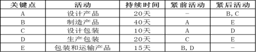
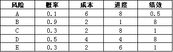

1、 作为你们公司项目办公室的经理，你必须经常判定哪些项目应该得到额外的资源。你还要建议哪些项目应该启动、继续进行或取消。有利于你做出这些决策的一个方法是
As manager of your organization’s project office, you often must decide which projects
will receive additional resources. You also recommend which projects should be initiated,
continued, or cancelled. One way to help you make these decisions is to
A：为项目明确一个整体风险级别 Determine an overall risk ranking for
the project
B：评估定量风险分析结果的趋势 Assess trends in quantitative risk
analysis results
C：对各种风险和条件进行排序 Prioritize risks and conditions
D：评估风险定性分析结果的趋势 Assess trends in qualitative risk
analysis results
2、
在执行阶段，市场部通知项目发起人中心小组提供了看产品的混合审查，需要进行细微变更，项目发起人指示项目经理包含变更，因为该变更不会改变范围或预算。项目经理接下来应该怎么做？
During the execution phase, marketing informs the sponsor that focus groups give the
project mixed reviews and a minor change is required. The sponsor instructs the project
manager
to incorporate the change, because it will not change the scope or budget. What should the
project manager do next?
A：记录要求的变更。 Document the requested change
B：为执行变更分配职责 Assign responsibility for implementing the
change
C：与受影响方沟通该变更 Communicate the change to the affected
parties
D：召集团队来评估变更的影响 Convene the team to evaluate the impact
of
the change.
正确答案：D你的答案：
解析：监控过程组 项目整合管理 实施整体变更控制的流程。
3、 项目管理计划导致一个持续时间较长的进度表。如果不能改变网络图，但有充足人员时，你应该：
Your project management plan results in a project schedule that is too long. If the
project network diagram cannot change but you have extra personnel resources, what is the
BEST
thing to do?
4、
在识别对项目预算会产生负面影响的风险发生之后，项目经理需要确定剩余的应急储备是否足够. 项目经理应该采用下列哪一项工具或技术？ impact to the project’s budget ，a project
manager needs to determine if the remaining contingency allowance is enough . what tool or technique should be
used？
5、 天气是一个众所周知的会影响户外节目成功的风险，节目前天气预报预测未来10天内不会下雨，项目经理接下来应该怎么做？
The weather is a well-known risk to influence the success of outdoor programs, the
program
before the forecast will not rain in the next 10 days, what should the project manager do
next?
6、
项目经理保留包含活动项目，问题和风险等项目信息的项目日志，项目开始时，所有相关风险都被归类并记录到项目日志中，到项目结束时，原先已清除的风险再次出现，项目推迟一个月。这种情况重新发生是因为项目经理：
The project manager keeps a project log containing project information such as
activity
project, problem and risks. At the beginning of the project, all relevant risk were
classified
and entertain the project log. Toward the end of the project, a risk that was closed comes
up
again and delay the project by one month. This situation reoccurred because the project
manager:
A：未能与项目团队成员沟通 Failed to communicate with project team
members
B：未能将项目日志分发给项目团队成员 Failed to distribute project team
members project log
C：没有召开项目进度会议 Not to convene project progress meeting
7、 管理层告诉项目经理外包一部分项目给一公司，该公司与管理层合作过很多次。在这种情况下，项目经理最应该关心的是：
Management tells a project manager to subcontract part of the project to a company
that
management has worked with many times. Under these circumstances, the project manager should
be
MOST concerned about:
A：确保该公司有资格完成该项目 making sure the company has the
qualifications to complete the project.
B：满足管理层的时间预期 meeting management’s expectations of time.
8、 一个项目由三个活动组成。A 活动历时 5 周，B 活动历时 6 周，C 活动历时 7 周。活动排序为 A-B-C。但是，活动 B 的资源分配要 1
周，C 在
B 活动开始 1 周后开始。则该项目最短工期是多少？
A project is made of three activities. Activity A is lasting for 5 weeks, activity B
is
lasting for 6 weeks, activity C is lasting for 7 weeks, the taxis is A-B-C. While, it will
take
1 week for resource distribution of activity B, and activity C will start in one week after
the
beginning of activity B. What is the shortest time limit for this project?
A：12 周 12 weeks
B：13 周 13 weeks
C：14 周 14 weeks
D：16 周 16 weeks
正确答案：C你的答案：
解析：PMBOK（6） 6.5.2.2关键路径法。如图：
9、 当信息发送者和信息接收者怎样沟通时，沟通通常会得到提高。
Communications are often enhanced when the sender the receiver.
A：信息发送者是信息接收者的下属 speaks up to
B：信息发送者使用更多肢体语言 uses more physical movements when
talking
to
C：信息发送者慢慢的说话 talks slowly to
D：信息发送者对信息接收者表示关心 shows concern for the perspective of
10、 下列哪种合同类型要求具有最完整且定义最精准的工作范围，并要求做好最周到的准备？
Which of the following contract types requires the most complete and accurate
definition
of the scope of work and requires the most preparation?
11、 一个全球项目有多个未定义条件。若要理解假设的影响，以及规划如何减轻不确定性因素而产生的影响，项目经理应使用什么技术？
A global project has several undefined conditions. To understand the impact of What-if
scenario and to plan the mitigation of the uncertainties, what technique should the project
manager use？
12、 一家公司希望开始一个新的产品线。项目经理确定了下列活动。由于原材料短缺，活动D延期。在不造成项目延期的情况下，项目经理可以接受该活动延期多少天？

A company wants to start a new product line. The following activities were identified
by
the project. Activity D was delayed due to the unavailability of a raw material. How many
days
of delay could the project manager absorb without delaying the project?
13、
项目经理完成了某个镇上的一个项目，这个项目让公司损失100%。项目经理所在公司目前正在筹备同一个镇上另一个项目的投标建议书，管理层让项目经理提供粗略的估算，让公司可以投标该新项目。投标必须在三天内完成。在这种情况下，项目经理应提供下列哪一项估算类型？
A project manager completes a project in a town where the company realized a
loss of
100%.The project manager’s company is working on another project proposal in the same town
and
the management asks the project manager to come up with a rough estimate that the
company
can bid for the new project. The bidding must be completed within the next three days. Which
of
the following types of estimates should the project manager provide in this situation?
14、 一个管道施工项目的项目分包商提议升级管道材料质量，而这不会影响进度或成本，这项材料变更已获得批准，应使用下列哪一项来记录这项变更？
A project Subcontractor for a pipeline construction project proposes to upgrade the
quality of the piping material, which does not affect progress or costs, and this material
change has been approved, which of the following should be used to record the change?
15、 项目团队成员对他们应该如何工作才能满足项目目标感到不确定。为了让团队成员更好的了解他们在项目当中的角色，项目经理应该向团队成员提供哪份文件?
A project team member is uncertain how their work is assisting in meeting objectives
of
the project. Which document will the project manager provide to the team member in order to
help
them better understand their role on the project?
A：项目沟通计划 Project communication plan
B：资源计划 Resources plan
C：项目章程 Project charter
D：项目管理计划 Project management plan
正确答案：B你的答案：
解析：9.1.3.1资源管理计划是关于如何分类、分配、管理和释放项目资源的指南。
16、 一项产品已经交付给客户进行测试验收，但由于产品未经外部检查机构的审计，客户拒收产品，项目经理下一步该怎么做
A project is delivered to the customer for test acceptance, but they refuse it because
the
product was not audited by an external inspection authority. What should the project manager
do
next?
A：协商开始审计过程 Negotiate the start of the auditing process
B：检查质量管理计划 Check the quality management plan.
C：修订进度计划，避免可能的影响 Revise the schedule plan to avoid a
possible impact
17、 由于组织结构的变化，相关方A承担了新的责任，并已经从指导管理委员会辞职. 相关方A替代者相关方B，提出与项目商业利益有关的问题.
项目经理首先应该怎么做？
As a result of changes in an organization’s structure，stakeholder A takes on new
responsibilities and steps down from the steering committee . stakeholder A’s
replacement，stakeholder B, raises issues regarding the project’s business
benefits.
What should the project manager do first？
A：在问题登记册中记录该问题，并更新项目利益 Document the issue in the issue
log
and update the project benefits.
B：更新项目管理计划 Update the project management plan
C：与相关方会面，包括项目发起人 Meet with the stakeholders，including
the
project sponsor
D：更新相关方登记册，并参考相关方管理策略 Update the stakeholder register
and
refer to the stakeholder management strategy
18、 在一个项目组织中经验丰富的项目经理接近项目的收尾阶段。项目经理接下来怎么做？
An experienced project manager in a projective organization is approaching the project
phase. What should the project manager do next?
A：核对一个为期多年新项目的项目分配 Check for a new multiyear project
allocation
B：将实际项目绩效与原计划对比 Compare actual project performance
against
the original plan
C：通知客户项目将会收尾 Inform the customer that the project will
be
closed
19、 一家玩具公司的项目团队希望将统计抽样应用到某些产品的检查流程中。随机抽取玩具样品进行检查。应在下列哪一个过程中确定抽样频率和规模？
A project team for a toy company wants to reduce the costs by applying statistical
sampling to the inspection process on some of the products. A sample of toys is randomly
selected for inspection. During which of the following processes should the sample frequency
and
size be determined?
A：收集需求 Collect Requirements
B：规划质量管理 Plan Quality Management
C：控制质量 Control Quality
D：管理质量 Perform Quality Assurance
正确答案：B你的答案：
解析：参见PMBOK第6版8.3.2.1 数据收集 统计抽样。
20、
项目团队刚刚制定完成一个新的订单跟踪系统的开发。项目发起人销售总监对新系统非常满意。而生产总监对此不满，并要求重新设计该系统以满足生产需求。项目经理估计重新设计系统会导致项目实施延迟两个月。项目经理本应如何做就可以避免发生这种情况？
A project team has just completed the development of a new order tracking system. The
project sponsor, the director of sales, is pleased with the new system. However, the
director of
manufacturing is not pleased and has demanded that the system be re-designed to meet
manufacturing concerns. The project manager estimates that a system redesign will delay
implementation by two months.How could the project manager have avoided this situation?
A：在编制计划阶段完成角色和职责矩阵 Completed a roles and responsibility
matrix in the planning phrase.
B：让项目相关方参与，确保要求不被忽略 Involved key stakeholders to ensure
that requirements were not overlooked.
C：确保让销售总监批准该需求 Ensured that the director of sales had
approved the requirements.
D：在编制项目计划阶段，制定有效的项目范围和变更控制流程 Developed an effective
project
scope and change control process during project planning.
正确答案：B你的答案：
解析：在规划项目、制定项目管理计划和项目文件时，项目团队应当鼓励所有相关相关方参与。
21、 在一个复杂的项目的早期阶段，项目经理收到一个请求，要为某产品提供宏观要求，项目经理可以从哪里获得这个信息？
During the early stages of a complex project, the project manager receives a request
to
provide high-level requirements for a product. Where would the project manager find this
information?
A：商业文件 Statement of work
B：项目管理计划 Project management plan
C：合同 Contract
D：项目章程 Project charter
正确答案：D你的答案：
解析：指南-4.1.3.1项目章程-高层次需求。
22、
由于爆炸发生的工厂是公司的首选供应商，供应商告诉项目经理之前预定的那些货物不能按时交付。幸亏其他货物可以替换这些货物，这样项目经理就使用此供应商的货物，这也是在之前的风险管理计划中提到的。这个例子是下面的哪个呢？
Due to an explosion at the factory of the company’s preferred supplier, the supplier
tells
informs the project manager that the ordered items for the project cannot be delivered in
time,
As these items can be easily replaced other items, the project manager uses the second-best
supplier as stated within the risk management plan. This is an example of which of the
following?
A：一个应急计划 a contingency plan
B：一个应急津贴 a contingency allowance
C：一个可能的变通方法 C. a workaround
D：后备计划 a fallback plan
正确答案：A你的答案：
解析：11.5.3.3风险登记册中的应急计划，风险发生时执行已规划好的应急计划。
23、 进度绩效指数低于 1.0 表示：
A schedule performance index of less than 1.0 indicates that the
A：项目没有完成预定的工作 Project is running behind the monetary
value
of the work it planned to accomplish
B：已取得的挣值达 100％ Earned value physically accomplished
thus
far is 100%
C：项目永久性地损失了一部分时间 Project has experienced a permanent
loss
of time
D：项目可能没有按照时间表执行，但是项目经理不必在意这个问题 Project may not be on
schedule, but the project manager need not be concerned
正确答案：A你的答案：
解析：PMBOK第6版 中 2016 7.4.2.2 偏差分析
24、 由于员工缺乏培训和适当的生产控制，生产过程中发现了错误需要返工解决。返工成本为$250,000。其中员工负有责任的成本为
Due to a lack of an employee training and proper production control, defects in a
production run caused rework which cost the company $250,000. How much of this cost is
directly
attributable to the employees on the production line?
A：$75,000 $75,000
B：$37,500 $37,500
C：$212,500 $212,500
D：$145,000 $145,000
正确答案：B你的答案：
解析：管理层对85%的质量成本负直接责任，员工则负另外的15%。
25、
项目需求要求额外的计算机用于执行，项目相关方要求项目经理研究采购计算机和租用相比的成本经济性。项目经理研究了以下各项：•使用远程安装的计算机成本将是每天$250 美元，加上安装费
1,250
美元。•采购计算机的成本将包括$1,250 美元装运费，$3,500 美元安装费以及$75 美元的日常维护成本项目经理应该怎么做？
Project requirements require additional computer for implementation. Stakeholders ask
the
project manager to research if buying the computers will be more cost efficient than leasing
them. The project manager researches the following: •Using computers installed remotely will
cost US$250 per day , plus a setup fee of US$1.250. •Buying computers will include $1250
freight
costs，US$3,500 in installation costs, and US$75 in daily ownership costs. What should the
project manager do?
A：如果这些计算机需要使用 22 天，则选择租凭。 Lease if these computers are
needed for 22 days.
B：选择租凭，因为如果采购计算机，一次性费用较高 Lease given the high one-time
fees
if computers are purchased.
C：如果这些计算机需要使用 25 天，则选择采购 Buy if these computers are
needed
for 25days.
D：选择采购，因为日均成本较低 Buy because of the lower daily cost.
27、 在一个系统执行项目中，在项目结束前两周发现一个系统功能脱离范围，已经通过变更流程批准。项目经理接下来应该怎么做？
In a system implementation project, a system feature is de-scope two weeks ends. The
change has gone through the perform integrated change control .What should the project
manager
do next?
A：按需求说明更新管理计划 update the project management plan as
stated
in the request
B：评估变更，并与客户讨论对项目成本的影响 assess the change, and discuss
the
impact on the project
C：拒绝变更，因为项目接近完工，影响将很大 reject
the change, since the project is going to be closed, the influence would be
D：与项目相关方一起讨论变更的影响 discuss the impact of the change with
project stakeholders
正确答案：A你的答案：
解析：所属过程组：监控过程组。所属知识领域：项目整合管理。解析：该题考查的是变更管理流程，被批准的变更请求。PMBOK第六版4.6.3.1
批准的变更请求。批准的变更请求是实施整体变更控制过程的输出,项目团队把批准的变更请求列入进度计划并付诸实施。批准的变更请求可能对项目或项目管理计划的某些领域产生影响。批准的变更请求可能导致修改政策、项目管理计划、程序、成本、预算或进度计划。选项
A 正确，B,D 属于变更管理流程中的内容，该变更以走完流程并被批准。C 错误，拒绝已批准的变更，不符合 PMI 规范。
28、 应该使用下列哪一种定量方法来制定项目预算?
What quantitative approach should be used in developing a project budget?
29、
政府法律的变更会对现有项目产生潜在影响。项目风险减轻计划用于解决潜在影响以及要求的行动。在政府法律变更发生之后，执行了必要措施，但是导致了新的风险。这属于哪种风险类型？
Changes in government laws can have a potential impact on existing projects. Project
riskmitigation plans are used to address potential impacts and actions required. After the
change ofgovernment law, the necessary measures were implemented, but the new risks were
caused.
What type of risk does this belong to?
A：触发风险 Trigger risk
B：残余风险 Residual risk
C：次生风险 Secondary risk
D：减轻风险 Mitigate risk
正确答案：C你的答案：
解析：11.5规划风险应对-引言-次生风险,选 C
30、 项目经理被任命一个处于执行阶段的项目。项目经理识别到几个导致团队担心的风险，为了规避这个风险。项目经理应该怎么做?
A project manager is assigned to a project in the execute. The project manager
identified
several risk which cause the team to concern .In order to solve the risk, what should the
project manager do?
A：更新风险登记册和制定风险应对计划 update the risk register and plan
risk
responses
B：审查风险管理计划 review the risk management plan
C：与所有团队成员分享更新的风险登记册 share the updated risk register
with
all the team member
31、 一个复杂项目的项目经理目前正在从事风险对应规划活动。作为风险管理方面的专家，项目经理考虑选择风险转移方案。风险转移的主要影响是什么？
The project manager of a complex project is working on planning risk response
activities.
As an expert in risk management, the project manager considers risk transfer options. What
is
the primary effect of risk transference?
A：项目经理不再负责项目成果 Project manager will not be in charge of
the
project production.
B：涉及到为承担风险的一方支付额外费用 Additional cost may be paid to who
will
be in charge of the risk.
C：涉及向承担风险的一方转移项目管理责任 May be transfer the project
management
responsibilities to who will be in charge of the risk
D：项目经理不能执行风险转移 Project manager cannot do risk transfer
33、 一个项目由四项活动组成，活动 A,B,C,D。活动 A 需要 10 天，活动 B 需要 24 天，活动 C 需要 19天，活动 D 需要 12
天。活动 A
和 B 之间存在完成开始关系。活动 A 和活动 C 存在完成开始关系，滞后 5 天。活动 B 和活动 D 存在完成开始关系，提前 2 天。活动 C 和活动 D
之间存在完成开始关系。根据以上依赖关系，完成项目的总时间是多少天？
A and B have a finish to start relationship A and C have a finish to start
relationship
with 5 days lag B and D have a finish to start relationship with 2 days lead C and D have a
finish to start relationship What is the total time to complete the project with the above
dependencies？
34、
工程部门想让项目的目标是吞吐量提高10%。信息技术部门想使投入该项目的资源不多于其拥有的5%。管理层，也是你的领导，想让项目团队减少纳税义务。你能做的最好的事是：
The engineering department wants the project objective to be a 10 percent improvement
in
throughput. The information technology department wants no more than five percent of its
resources to be used on the project. Management, who is also your boss, wants the project
team
to decrease tax liability. The BEST thing you can do is:
A：使计划满足所有的目标 put a plan together that meets all the
objectives.
B：让这些人讨论得出一个目标 have these people get together and
agree on
one objective.
C：考虑工程部门和信息技术部门的目标，而为管理层的目标召开进一步的会议 include the engineering
and
information technology objectives but hold further meetings regarding management's
objective.
35、 供应商承包完成某处某项可交付成果，规定买方将会支付卖方的成本且卖方每提前一天完成，买房还支付 1%的费用，与供应商签订的合同属于什么类型？
A supplier is contracted complete a deliverable in which the buyer will pay the
Seller’s
cost as well as provide a 1% fee for each day the deliverable is ahead of deadline. What
type of
contract would be established with the supplier?
36、 在与相关方一起召开的季度状态评审会上，由于计划外的运输罢工，施工公司的项目经理汇报了一个负成本偏差。项目经理应该如何解决这个问题？
At the quarterly status review with stakeholders, a construction company reports a
negative cost variance, which is due to an unplanned transport strike. What should the
project
manager do to address the issue？
A：调整成本绩效基准。 Adjust the cost performance baseline.
B：从应急储备中分配资金。 Allocate the funds from the contingency
reserve.
C：从管理储备金分配资金。 Allocate the funds from the management
reserve.
D：测量项目事件的影响 Measure the impact of the event to the
project.
37、
活动A的持续期3天，而且要在星期一（4号）开始。接下来的活动B和活动A是首尾相连的关系。这种首尾相连的关系中间又发生了3天的滞后时间，而且活动B的持续时间是4天。星期日是公休日。根据这些数据你能得出下列哪个结论？
Activity A has duration of 3 days and begins on the morning of Monday the 4th. The
successor activity, B, has a finish-to-start relationship with A. The finish-to-start
relationship has 3 days of lag, and activity B has duration of 4 days, Sunday is a
non-workday.
What can be determined from these data?
A：两项活动的总持续期为8天 The total duration of both activities is
8
days.
B：从A开始到B结束的日历天数为11天 Calendar time between the start of
A to
the finish of B is 11 days.
C：B活动结束的日期是星期三（13号） The finish date of B is Wednesday
the
13th.
D：从A开始到B结束的日历天数为14天 Calendar time between the start of
A to
the finish of B is 14 days.
A：比最长活动的持续时间短。 Shorter than the duration of the longest
activity
B：比它代表的活动的持续时间短。 Shorter than the activity it
represents
C：没有持续时间。 There is no duration
D：和它代表的活动的持续时间相同。 Same length as the activity it
represents
正确答案：C你的答案：
解析：里程碑只标志事件不消耗资源。
39、 准备每周状态报告时，项目经理注意到该周的计划里程碑满足。但是，项目的进度绩效指数为0.8。项目经理接下来应该怎么做？
While preparing a weekly status report, the project manager notices that the planned
milestones for the week were met. However, the project’s schedule performance index is
0.85.What
should the project manager do next?
A：核实所有里程碑 Verify all milestones.
B：核实是否有任何逾期任务 Verify whether there are any overdue
tasks.
C：由于所有里程碑均已满足，不需要任何行动 As all milestones were met, no
action
is required.
D：由于所有里程碑均已满足，可以在之后考虑进一步行动 As all milestones were met,
further action could be considered at a later time.
40、
一名新的项目经理被任命管理一个项目，而该项目已经在进行中。由于涉及到的资源非常多，新的项目经理弄不清楚每个人的职责范围。新的项目经理可以参阅什么文件来解除他的困惑？
A new project manager is assigned to a project that is already in progress. Because
there
are so many resources involved, the new project manager is confused about who does what.
What
document can the new project manager consult to clear their confusion?
41、
某项目正在经历越来越多的问题，开展初步的根本原因分析之后，项目经理怀疑这些问题具有一个共同的技术原因，团队制定的风险管理计划被认为是不全面的。应该使用下列哪一项工具来评估风险管理过程的有效性？
A project experiences an increased number of issues. After an initial root cause
analysis,
the project manager suspects these issues have a common technical cause. It is believed that
the
risk management plan prepared by the team is not comprehensive. Which of the following tools
should be used to evaluate the effectiveness of the risk management process?
42、 在为一个价值 1500 万美元的项目招标过程中，采购经理发现了两个潜在的公司符合招标书的工作，A 公司费用较高，但比 B
公司拥有更多的专业知识。然而，B
公司符合项目预算，但 A 公司不符合。采购经理正处于下列哪一个过程？
During the bidding process for a US$1.5 million project, the procurement manager
discover
that there are two potential companies that could be hired to accomplish the statement of
work.
Company A is more expensive and has more expertise than company B. However, company B has
the
project’s budget, but company A dose not. In which of the following processes is the
procurement
manager?
A：召开投标人会议 Conduct Bidder Conferences
B：规划采购管理 Plan Procurement Management
C：实施采购 Conduct Procurements
D：管理采购 Administer Procurements
正确答案：C你的答案：
解析：见 12.2/实施采购。实施采购时获取卖方应答、选择卖方并授予合同的过程。
43、 指导委员会因为外部影响而取消项目，此时 SPI 为 0.5。项目经理接下来应该怎么做？
Due to external impacts，the project is cancelled by the steering committee at an SPI
of
0.5. what should the project manager do next？
A：执行 EVA，查明是 CV 还是 SV 导致 SPI 等于 0.5 Perform an EVA to
find
whether the CV or the SV is the reason for the SPI of 0.5
B：继续收尾过程，向其他方移交项目已完工和未完工的可交付成果. Proceed with closure
process to transfer the project’s finished and unfinished deliverables to others
C：什么也不做，若项目由指导委员会停止或关闭则无需收尾过程 Nothing，when the project
is
officially closed by the steering committee, no closure processes required.
D：实施根本原因分析，查明取消项目的原因 Conduct a root cause analysis to
find
the reasons for the cancellation of the project
44、 项目团队希望聘用第三方公司来设计和执行一部分项目。在选择供应商时，下列哪一项技术能确保公平性？
The project team would like to hire a third party company to design and execute part
of
the project. When selecting a vendor, which of the following technologies ensures fairness?
45、
一名新项目发起人接管一个处于执行阶段的项目。项目发起人要求项目经理停止同意项目资源时间表。相反，发起人将该任务分配给另一名团队成员。若要重新确立控制权，项目经理下一步应该做什么？
A new sponsor takes over a project in the execution phase. The sponsor directs manager
to
stop approving the project resources timesheets. Instead, the sponsor assigns task to
another
team member. To re-establish control, what should the project manager do next?
A：组织与项目发起人召开会议，确定新的批准流程。 Organize a meeting with the
sponsor to establish a new approval process.
B：遵循新项目发起人的指标，将任务委托给团队成员。 Follow the new sponsor’s
instruction and delegate the task to the team
C：让项目发起人参考资源管理计划。 Refer the sponsor to the human
resource
management plan.
D：让项目发起人参考项目章程中提供的职权。 Refer the sponsor to the
authority
provided in the project charter.
46、 在定义范围之前，项目经理必须具有下列哪一份文件？
What document must a project manager have before defining scope?
A：需求管理计划 Requirement management plan
B：项目章程 Project charter
C：项目范围计划 Project scope plan
D：项目风险计划 Project risk plan
正确答案：B你的答案：
解析：指南-5.3.1.1项目章程，定义范围以项目章程为输入。
47、 一项目经理被他的项目的各种问题折磨得狼狈不堪。他想找出问题的根源，以决定把注意力放在哪儿。该项目经理最应该使用下列哪项工具？
A project manager has been overwhelmed with problems on his project. He would like
toidentify the root cause of the problems in order to determine where to focus his
attention.
Whichof the following tools would be BEST for the project manager to use?
49、 一个项目已经启动，项目经理正在制定质量管理计划。质量管理计划与下列哪一项有关？
A project has been initiated and the project manager, works on developing the quality
management plan. The quality management plan should do which of the following?
A：描述在项目中是如何执行质量控制的 Describe how quality control will
be
performed within the project
B：包含质量核对表 Include a quality checklist
C：确定定性和定量参数 Identify qualitative and quantitative
parameters
D：包含帕累托图 Include a Pareto chart
正确答案：A你的答案：
解析：参见 PMBOK第六版 8.1.3.1 质量管理计划。
50、 一个外包项目的可交付成果预计需要数年时间才能完成，项目经理应该建议哪种合同类型？
The deliverable of an outsourced project is expected to take years to complete, and
what
type of contract should the project manager recommend?
A：总价值加激励费用合同 Total value plus incentive cost contract
B：按经济价格调整的总价合同 Lump-sum contract adjusted by economic
price
51、 项目实施阶段，一位团队成员找到了项目经理，因为他不知道哪些工作需要他来完成。以下哪个文件对工作包做了详细描述？
During project executing, a team member comes to the project manager because he is not
sure of what work he needs to accomplish on the project. Which of the following documents
contain detailed descriptions of work packages?
A：工作分解结构词典 Work breakdown structure (WBS) dictionary
52、 项目发起人要求项目经理提前一个月完成项目。若要满足这项请求，应该使用什么？
The project sponsor asks the project manager to complete the project one month ahead
of
schedule. What should be used to accommodate this request?
53、 下列哪一项用在定义范围当中?
Which of the following is used in define scope?
A：产品分析 Product analysis
B：范围基准 Scope baseline
C：WBS字典 WBS dictionary
D：预测和检查 Forecasts and inspection
正确答案：A你的答案：
解析：定义范围过程的工具与技术。B、C属工作分解结构输出，D属执行范畴。
54、 针对设计经理提出的某个问题的解决方案，项目经理必须收集分析信息。以下哪一项能防止任何人对结果产生不适当的影响？
Regarding the resolution of an issue identified by the engineering manager, the
project
manager must gather information and reach a consensus of analysis. Which of the following
presents any one person from having undue influence on the outcome？
55、
在项目过程中，发生了一个意外。该事件影响了项目成本，但是未影响到时间。该事件之前被项目团队识别为一项潜在风险。若要限制该事件对于项目成本的影响，项目经理应该怎么做？
During the project, an incident occurs which impacts the cost of the project, but not
the
time. The event was previously identified as a potential risk by the project team. What
should
the project manager do to limit the impact of the incident on the project cost?
A：查看风险登记册，并确定适当和既定的应对措施 Refer to the risk register to
determine the appropriate and agreed upon response
B：分析该事件，包括对成本和时间的影响，并创建变更请求 Analyze the incident,
including
impact in cost and time, and create a change request
C：制定权变措施，并立即实施，尽可能减少成本超支 Develop a workaround and
implement this immediately to minimize cost overruns
D：执行敏感性分析，确定不同应对的成本超支灵活性 Perform a sensitivity analysis
to
determine the flexibility in cost overruns by different responses
56、
影响指数(如图)项目团队确定了风险发生的概率，评估每个风险潜在应对成本，进度和性能的影响。这些信息已在表中显示出来。如果满足成本是这个项目是最优先考虑的。那么项目团队承担的最关键的风险是什么呢？
(Impact scores) A project team identifies several risks and assesses probability of
occurrence and potential impact on cost, schedule, and performance for each risk. This
information is presented in the table shown. If meeting cost objectives is the highest
priority
for this project. Which is the most critical risk for the project team to address?

A：风险 A Risk A
B：风险 B Risk B
C：风险 C Risk C
D：风险 D Risk D
正确答案：D你的答案：
解析：概率*成本 影响最大的风险是D。
57、 相关方感觉他们收到的信息十分复杂，难以理解，因此，不能正确做出决定。若要解决这个问题，应该怎么做？
The stakeholders feel that information they receive is complex and difficult to
understand. And because of this decisions cannot be properly made. What should be done be
resolve this situation?
A：审查沟通需求 Review the communication requirements
B：减少报告数量 Reduce the number of reports
C：包含一个常用术语表 Include a glossary of common terminology
58、 在项目执行过程中,你被任命为项目经理。项目各项指标都在基线的允许范围内,如果客户对项目绩效不满意,你首先应该做什么?
You are assigned project manager in executing project; the project is in control on
baseline, if customers are not satisfied with the performance, then what you should do
firstly?
59、 项目团队成员识别项目质量需求，并记录项目应该如何遵守这些需求。他们应该使用哪一项工具和技术？
The project team members identify project quality requirements and document how the
project will demonstrate compliance. Which tools and techniques should they use?
A：流程图，控制图和因果图 Flowchart, control chart, and cause and
effect diagrams
B：流程图，成本效益分析和趋势图 Flowchart, cost-benefit analysis, and
run
charts
D：流程图，控制图和散点图 Flowchart, control chart, and scatter
diagrams.
正确答案：C你的答案：
解析：规划质量工具包括：专家判断、数据收集、数据分析、决策、数据表现、测试与检查的规划、会议
60、 一卖方的管理层告诉其项目经理该项目应想方设法取得奖金。合同中奖励条款的主要目的是：
A project manager for the seller is told by her management that the project should do
whatever possible to be awarded incentive money. The primary objective of incentive clauses
in a
contract is to:
A：降低买方的成本 reduce costs for the buyer.
B：帮助卖方控制成本 help the seller control costs.
C：同步目标 synchronize objectives.
D：通过转移买方的风险来降低卖方的风险 reduce risk for the seller by
shifting
risk to the buyer.
正确答案：C你的答案：
解析：奖励就是使卖方的目标和买方的一致，既面向进度又有相同的目标。
61、 公司管理层正在削减预算，因此必须做出如何削减某个关键正在进行的项目预算。项目经理首先应该怎么做？
Budgets are being reduced by company management; there how to reduce the budget of a
critical, ongoing project. The project manager should do which of the following first?
A：提交能够减少成本的更新进度计划，并减少最终可交付 Submit an updated schedule
that
reduces cost, and reduce final deliberates
B：解散某些分配的资源并延长项目时间线 Dismiss some of the assigned
resources
and lengthen
C：减少管理储备以保持项目进行 Eliminate the management reserve to
keep
the project.
D：使用敏感性分析评估不同风险 Use a sensitivity analysis to evaluate
the
various risks.
62、
依据项目管理计划的标准，项目经理遇到问题，并就此提出变更请求，变更请求获得批准，被执行和记录在项目文件中。项目经理应该记录问题和采取的措施记录在哪里，以便未来项目获益？
Following the standards included in the project management plan, a project manager
experiences an issue and proposes a change request. The change request is approved,
implemented,
and documented in the project documentation. Where should the project manager record the
experiences, issues, and actions taken to benefit future projects?
63、
受P&T建筑公司雇用，一位造价工程师为该公司在中国的首个油田的管道建设项目估算成本，但没有得到任何详细工程数据。这位工程师应采用哪种费用估算方法为P&T建筑公司提供初步成本预算？
A cost engineer was engaged by P&T Construction PLC to provide a cost estimate for
the
first oil field piping project in China without any detail engineering data. What type of
cost
estimate approach should the engineer use to provide an initial cost estimate to P&T
Construction?
A：近似估算 Approximate estimate
B：量级估算 Order of magnitude estimate
C：限定性估算 Definitive estimate
D：可行性估算 Feasibility estimate
正确答案：B你的答案：
解析：PMBOK第6版中7.2估算成本-引言-量级估算。在启动阶段可得出项目的粗略量级估算
64、 你们在为美国能源部做一个项目，采用挣值分析作为绩效报告技术。现在项目已经完成了 20%，挣值分析的结果显示 CPI 为 0.67，SPI 0
.87。在这种情况下，你应该：
Your project for the U.S. Department of Energy is using earned value analysis as a
performance reporting technique. Your project is 20% complete. Results from a recent earned
value analysis indicate that the CPI is 0 .67 and the SPI is 0.87. In this situation, you
should
A：实施额外的资源计划，增加资源并用比预计更多的时间来完成预算的工作量 Perform additional
resource planning, add resources, and use overtime as needed to accomplish the same
amount of budgeted work
B：重新设置进度基线，再进行蒙特卡罗分析 Re-baseline the schedule, then use
Monte Carlo analysis
C：实施一项风险应对审核来帮助监督风险 Conduct a risk response audit to
help
control risk
D：重新识别风险，实施定性风险分析和实施定量风险分析 Update to Identify Risks,
Perform Qualitative Analysis and Perform Quantitative Analysis
65、 项目经理估算开发新产品的价格. 在最有可能情景中，成本将会是 10,000 美元；在最好情况下，成本将会是 9,000 美元；在最坏情况下，成本将会是
17,000 美元；如果利用 PERT 加权分析法，项目的预期成本将会是多少？
The project manager estimates the cost of developing new products. In the most likely
scenario ，the cost would be US $ 10,000；In the best case scenario ，the cost would be US
$9,000;in the worst case scenario ，the cost would be US $ 17,000. If the PERT weighted
average
analysis is used ，what would be the expected cost of the project？
66、 采购订单属于哪一种合同类型？
Which contract type is a purchase order?
A：工料合同 Time and material
B：成本加固定酬金合同 CPFF
C：成本补偿合同 Cost-reimbursable
D：固定总价合同 Firm fixed-price
正确答案：D你的答案：
解析：按照规定的价格交付规定的产品的采购订单也是固定总价合同的一种
67、 识别风险之后，项目团队对项目结果的影响意见不一致，项目经理首先应该怎么做?
After identifying the risks, the project team does not agree about the impact to the
project outcome. What should the project manager do first?
68、 项目在完工前终止,项目发起人说明终止的原因是由于缺乏资金。项目经理下一步应该采取下列哪一项？
The project is terminated before completion. The project sponsor indicates the reason
for
the termination is a lack of funds. Which of the following actions should the project
manager
take next?
A：请求项目发起人寻找其它的项目融资方式，并提出建议，例如向金融机构寻求贷款。 Request the
sponsor
find alternative ways of funding the project and suggest certain references, e.g.
seeking loans from financial institutions.
B：请求另一个项目的项目经理启动向其它项目注资的步骤。 Request a project manager
from
another project to initiate steps needed to fund their project.
C：与项目团队一起集思广益，寻找出项目融资的来源。 Brainstorm with the project
team
to find sources of funding for the project.
D：将经验教训和历史信息存入到经验教训知识库，以备未来项目使用 Transfer lessons
learned
and historical information to the lessons learned knowledge base for used by future
projects.
69、 项目经理刚刚接受任命去管理一个处于执行阶段中期的项目。该项目的项目人员流动率很高。项目经理首先应该做什么？
The project manager has just been assigned to manage a project in the middle of the
execution phrase. The project has had a high turnover rate of project resources. What should
the
project manager do FIRST?
A：组织一个团队建设活动，改进团队士气。 Organize a team-building event to
improve team morale.
B：与项目发起人沟通，以获得保证项目人员的承诺。 Talk to the project sponsor to
get
commitment for project resources.
C：检查人员管理计划 Check the staffing management plan.
D：将最积极的团队成员调到同一间房间，增强他们作为一个团队的执行能力。 Move the most
active
team members to the same room to enhance their ability to perform as a team.
正确答案：A你的答案：
解析：提高团队绩效的方法包含培训、团队建设活动。
70、 产品开发需要外包一部分内容，项目经理制作了一份文件，将会向供应商提供足够的细节来确定他们是否能够提供要求的外包部分。项目经理制作的是下列哪一部分文件？
There is a need to outsource part of the product development. The project which will
provide sellers with sufficient detail to determine if they can provide the required
outsourced
component. What document is the project manager developing?
71、
启动实施项目新系统时会遇到麻烦，由于对项目可交付成果的讨论广泛且矛盾。项目经理离开公司，一个新的项目经理接手这个任务。那么新的项目经理首先应该采取什么行动？
Project to implement a new system has trouble launching due to extensive and
contradictory
discussions regarding the project deliverables. The project manager leaves the company, and
a
new project manager is assigned to the task. What should be the first action for the new
project
manager?
A：正式确定项目管理计划，并传达给相关利益方 Formalize the project
management
plan and communicate this to relevant stakeholders
B：扩大项目发起人，并请求支持处理正在进行的讨论 Escalate to the project
sponsor
and request support in handling the ongoing discussions.
C：制定工作分解结构，并传达给所有利益相关者 Develop a work breakdown
structure
and communicate this to all relevant stakeholders.
D：形成一套完整的项目章程，并且能够得到项目发起人和关键利益相关者的支持 Formalize a
project
charter and request approval from the sponsor and key stakeholders.
72、
某公司计划举行一个区域会议，上次的类似会议没有成功,上层要求你确保这次会议能够圆满成功。为了分析上次会议的问题以及确定成功举行本次会议，你会用到什么工具？
A company plans to hold a regional meeting, the last such meeting was unsuccessful,
and
the upper level asks you to ensure that the meeting will be successful. What tools would you
use
to analyze the problems of the last meeting and determine the successful holding of this
meeting?
73、 以下是为项目计算的：挣值=200，000美元计划价值=300,000美元实际成本=210,000美元项目的状态是什么？
The following is calculated for the project. Earned value=us$200,000 Planned
value=us$300,000 Actual cost=us$210,000 What is the status of the project?
74、 在一个高端项目中，项目管理办公室（PMO）主管想要证明项目可交付成果的质量符合组织和法律规章的证据。PMO
主管还需要已确认的所有项目差距和最佳实践。项目经理应该向 PMO 主管提供下列哪一份文件？
In a high-profile, the project management office (PMO) director want evidence that the
quality of the project deliverables conforms to organizational and legal regulations. The
PMO
direct also want all project gaps and best practices identified. What document should the
project manager provide to the PMO director?
A：由内部团队创建的质量控制文件 Quality control document created by
the
internal team
B：由内部团队创建的质量管理文件 Quality management document created by
the
internal team
C：由外部资源创建的质量控制文件 Quality control document created by an
external source
D：由独立资源创建的质量控制文件 Quality control document created by an
independent source
75、 一名新团队成员加入项目。由于新团队成员之前在公司没有任何经验，项目经理建议项目成员审阅公司以往项目的项目文件。这是利用下列哪一项的实例？
A new team member joins a project. Because the new team member does not have any
previous
experience with the company, the project manager recommends that the team member review
project
files from the company’s previous projects. This is an example of leveraging which of the
following?
76、 项目团队成员认为能够独立工作，并认为项目经理信任他们能在不严密管理团队的情况下完成任务。项目经理证明的是哪一种管理方式？
Project team members think they can do work independently and believe that the project
manager trusts them to deliver their tasks without managing the team closely. Which
management
style does the project manager demonstrate?
77、
一名关键的项目相关方要求团队成员对某项功能进行了一些小修改。团队成员认为该变更所涉及的时间很短。因此在没有通知项目经理的情况下，就实施了变更。在确认范围期间，项目经理发现了团队成员的修改。在执行详细的分析之后，项目经理发现团队成员的初步分析并不完整。这项修改需要投入额外的人工量和时间。项目经理下一步应该怎么做？
A key project stakeholder requests that a team member make a small modification to a
feature. The team member decides the change could be incorporated in a short timeframe. The
team
member implements the change without informing the project manager. During validate scope,
the
project manager finds out about the team member’s modification. After conducting a detailed
analysis, the project manager finds that the team member’s initial analysis was incomplete
and
the modification needed additional effort and time. What should the project manager do next?
A：撤销团队成员所包含的变更，执行下一个阶段，同时通知项目相关方。 Proceed to the next
stage
by revoking the change incorporated by the team member and informing the stakeholder
accordingly
B：与项目相关方讨论该变更的重要性，强调对成本和进度的进一步影响。如果项目相关方坚持要将该变更包含在内，向变更控制委员会报告该变更，以获得批准。 Discuss
with the stakeholder the importance of the change, highlighting the further impact
on
the cost and schedule. If the stakeholder insists on including the change, report
the
change to the change control board for approval.
C：通知项目相关方由于变更对成本和进度的进一步影响。在目前项目所处的阶段，不能将变更包含在内 Inform
the
stakeholder about the further impact on cost and schedule due to the change. In the
current stage of the project, the change cannot be included.
D：将项目相关方直接与团队成员交流的事上报给项目发起人 Escalate to the sponsor
about
the stakeholder directly interacting with the team member.
正确答案：B你的答案：
解析：由4.6实施整体变更控制的基本原理 AD 明显错误。BC 相比，B 按照变更流程进行，选 B。记住：CCB 的责任是接收与审查变更请求，并批准或否决这些请求。另外，CCB
决策都应记录在案，并传递给相关方，以便采取后续措施
78、 项目完成时，客户根据对应供应商绩效的主观决定，拒绝支付其中一部分总金额，合同应属于下列哪一项？
At a project’s completion, the customer refuses to pay a portion of the total amount
based
on a subjective determination of the vendor’s performance. The contract would be which of
the
following?
79、 一客户给你一复杂项目的采购工作说明书，该项目为期 8 个月，未知的东西不多。客户只要你将它完成，只要在 8
月末你交付项目的时候见你。在这种情况下，下列哪种做法最好？
A customer has given you a contract statement of work for a complex, eight month
project
that has a few unknowns. The customer has asked you to just get it done and onlywants to see
you
at the end of eight months when you deliver the finished project. Under these circumstances,
which of the following is the BEST thing to do?
A：按要求完成项目，但是一直与客户时不时地确认其范围 Complete the project as
requested, but validate its scope with the customer occasionally throughout.
B：在 8 个月内完成项目，期间不联系客户 Complete the project within eight
months without contacting the customer during this time.
C：让管理层时不时地和客户联系 Ask management to check in with the
customer occasionally.
D：完成项目，但是记录下客户不想联系 Complete the project, but document
that
the customer did not want contact. Procurement Management Answers
80、 项目团队制作了一份图表，将已识别风险的类别和子类别联系起来。项目团队正在制作下列哪一项？
The project team prepares a chart linking the categories and subcategories of
identified
risks. Which of the following is the project team doing?
81、 项目包括 1000 多个工作包为期两年，项目 CPI 为 1. 18, SPI 为 0. 88。项目经理应采用何种方法处理该情况？
The project has more than 1,000 work packages, and is two years long. It is performing
with CPI=1.18 and SPI=0.88. What technique should the project manager use to solve this
situation?
82、 项目经理向项目赞助人通知了一项重大项目超支，赞助人想知道为什么没有在赞助人反馈前较早通知该情况，项目经理本应采取何种措施解决该问题
A project manager advises the project sponsors of a significant project cost overrun.
The
sponsors want to know why they were not advised earlier of this situation. What should the
project manager have done to address this issue prior to the sponsors' feedback?
A：制定沟通计划，处理项目利害关系者的需求 Create a communication plan to
address the needs of the project stakeholders
B：邀请项目赞助人参加团队会议进行定期更新 Invite the project sponsors to
team
meeting for regular updates
C：将意外支出加入项目预算，从而将超支纳入项目成本 Add contingency to the
project
budget so overspend is absorbed into project costs
D：消减项目资源以紧急弥补成本超支 Cut back on project resources to the
project to recover cost overrun as a matter of urgency
83、
在项目规划阶段，项目经理认识到与其中一名项目相关方在项目可交付成果方面的理解存在差异，从而造成与该项目相关方的关系紧张。要解决这个问题，项目经理应该怎么做？
During the planning phase of a project, the project manager realized that there are
differences on the understanding of the project deliverables with a project stakeholder,
which
results in a strained relationship with that stakeholder. What should the project manager do
to
address this issue?
A：忽视该项目相关方 Ignore the stakeholder
B：安排一次与该项目相关方的会议，了解造成理解差异的原因，并予以解决 Arrange a session
with
the stakeholder to understand the reasons behind the differences and address them
C：将该问题报给项目发起人，让他们为项目经理解决这个问题 Escalate it to the sponsor
so
that they can sort it out for the project manager
D：让其他团队成员说服项目的相关方妥协 Ask the other team members to
convince
the stakeholder to back down
正确答案：B你的答案：
解析：解决问题首先要了解问题的原因，然后通过分析制定应对方案，建立决策。参考附录G。
84、 项目管理团队等到可交付成果或子项目澄清后才能制定详细的工作分解结构，这种情况下，该选择下面哪项技术？
Which of the following is a technique where the project management team elect until
the
deliverable or subproject is clarified so that the detail of the work breakdown structure
can be
developed?
85、 在一个项目测试阶段，项目团队发现了缺陷，项目团队应该使用什么工具来确保缺陷已被识别并记录？
During project’s text phase, the project team finds defects. What tool should the
project
team use to ensure the defect are identified and recorded?
86、 如果项目因某些活动时间限制而无法如期完工，客户对这些活动可做出何种推测？
If the project cannot be completed as scheduled due to certain activity time limits,
what
assumptions can the customer make about these activities?
A：开始时间不切实际 Start time impractical
B：资源不足 Insufficient resources
C：最晚的开始时间， 晚于最早的结束时间 The latest start time, later than
the
earliest end time
87、 从前一个项目中学到的经验教训对当前的项目范围说明书会产生什么影响？
How should lessons learned from a previous project affect a current scope statement？
A：由于工作分解结构是完整的，经验教训对范围说明书不会产生影响. Science the work
breakdown structure is complete，lessons learned will have no impact on the scope
statement
B：如果不忽视经验教训，范围说明书的制定会更快 The scope statement will
develop
more quickly than when the lessons learned are ignored
C：在当前的范围说明书中，将不大可能会重复过去的错误或疏忽失误. The past mistakes or
errors of omission are less likely to be repeated in the current scope statement.
D：经验教训不会受到经验教训知识库的影响，因为所有项目都是独特的. The scope statement
will
be unaffected by the lessons learned knowledge base, because all projects are
unique.
正确答案：C你的答案：
解析：指南-2.3.2组织知识库。
88、 某天晚上下班的时候，由于司机休假，你们公司的 CEO
不得不自己开车。但是他怎么也找不到出楼的路，加上他本来已经比较疲惫了，所以他感到非常恼火。第二天就找人要改善本楼的出入系统，以方便大家进出。而你正是这个出入系统的项目经理，你决定用流程图来做什么事情？
After a long and frustrating day, your company CEO found himself circling the
attendant’s
booth at the adjacent parking garage in a futile attempt to find his way out of the building
(his limousine driver had taken the day off). He approached the building manager the next
day
and said he would have his staff design an improved system for vehicle egress and ingress.
You
are the project manager for this project. You decide to use flowcharting to
89、 项目经理完成三个月的工作，成本偏差为$-3,000美元，挣值分析显示下列哪一项？
A Project manager completes three months of work with a cost variance of $-3,000.
Which of
the following does the earned value analysis show?
A：有利；项目的执行效率比计划高 Favorable; the project is performing
more
efficiently than planned
B：不利；项目的执行效率比计划低 Unfavorable; the project is performing
less efficiently than planned
C：有利；项目提前于进度 Favorable; the project is ahead of
schedule
D：不利；项目落后于进度 Unfavorable; the project is behind of
schedule
91、 在质量控制期间，项目经理发现超出产品A的控制限值结果比质量测量指标中规定的频率高.项目经理决定启动质量审计. 谁应该执行质量审计？
During quality control ，the project manager discover results that exceed the control
limits for product A more often than stated in the quality metrics. The project manager
decider
to initiate a quality audit. Who should perform the audit？
A：公司或外部审计员 Company or external auditors
B：负责产品A 的团队成员 The team member responsible for product
92、 项目的进度绩效指数为 0.5，成本绩效指数为
0.25，当第一个里程碑接近完成时，项目经理会引导第一次相关方会议沟通项目状态。在项目的这个时候，项目经理应该做什么？
The project’s schedule performance index is 0.5 and the cost performance index is
0.2.When
the first milestone near completion, the project manager will conduct the first stakeholder
communicate the project’s status. At this point in the project, what should the project
manager
do ?
A：向项目相关方提供有关项目状态的正面反馈 Provide stakeholders with
positive
feedback about the project status
B：召开一次团队会议，讨论将项目恢复正常进度并符合预算的方法 A team meeting to
discuss
the project back to normal schedule and is in line with the budget method
C：向相关方沟通项目符合进度，但超出预算 Notify stakeholder that project in
line with the schedule, over budget
D：提交一项变更请求，增加工期和预算 Raise a change request, increase the
time limit for a project and budget
94、 项目经理发展团队会议由于主导讨论的人迟到而中断。若要提高团队会议的效率，项目经理应怎么做？
Project Manager Development Team meeting was cancelled due to the person leading the
discussion being late. To improve the effectiveness of team meetings, what should the
project
manager do?
A：使用专业引导师。 Use a professional facilitator
B：认可按时到达的团队成员。 Recognize team members who arrive on
time.
C：为团队会议设定基本规则。 Set ground rules for team meetings.
95、
一家跨国公司聘用了一家施工公司来为其全球总部建设一座20层的办公大楼，项目发起人要求办公大楼增加第21层，这层办公楼未在原始计划中，项目经理要求发起人批准标准的项目变更请求。但是，项目发起人拒绝并认为电子邮件批准已经足够充分。下列哪一份文件将避免这种类型的问题？
A multinational company hires a construction firm to build a 20-floor office tower for
its
world headquarters. The project sponsor requests a 21th floor be added to the tower. This
floor
was not in the original plan. The project manager asks the sponsor to approve the standard
project change request. However the sponsor refuses and believes an email approval should be
sufficient. Which of the following documents would prevent this type of issue?
A：定义明确并被批准的变更管理计划 Well-defined and approved change
management plan
B：详细的变更请求登记册 Detailed change request register
C：详细并批准的工作分解结构 Detailed and approved work breakdown
structure
D：合同签署授权矩阵 Contractual signing authority matrix
正确答案：A你的答案：
解析：4.2.3.1 项目管理计划-变更管理计划。变更管理计划用来明确如何对变更进行监控。
96、
一家跨国公司希望扩张组织。其扩张计划的其中一部分包括在选定地理位置建立一系列分支机构。项目发起人已经草拟了项目章程，现在正在寻求项目经理的帮助，最终确定项目章程的内容。以下是当前版本项目章程的摘录。项目章程摘录：总体目的，扩大公司在成长市场的影响力，向私人客户提供更多的本地接入服务。目标：=-建立多个分支机构。=-增加私人客户的数量=-提供一系列服务。高层次风险：=-对当地条件、和法规的认识有限=-快速发展的不稳定市场=-大量竞争对手都在关注相同的机会。为了提高验收成功的机会，我们应该怎么样来进一步完善项目章程呢？
An international company is locking to expand its organization. Part of this expansion
plan includes establishing a series of branch offices in selected geographical locations.
The
project charter has been drafted by the sponsor .who is now seeking the project manager’s
help
finalizing the content. Below is an excerpt of the current version of the charter. Project
charter excerpt: Overall purpose; expand the company’s presence in growing marking markets
and
offer more local access to private customers. Objectives: -Establish a number of branch
offices.
-Increase the number of private customers -Offer a range of services. High level risks:
-Limited
knowledge of local conditions, rules and regulations -A rapidly developing unstable market
-Large number of competitors looking at the same opportunities What should be further
improved
in the project charter to increase the chances of a successful completion and acceptance?
A：明确该项目的目的，以更好的明确总体目标 Improve the project’s purpose to
clarify the overall goal
B：制定一套完善的风险应对策略 Improve the risks by developing a set
of
clear risk response strategies
C：改进目标，明确每个人的措施和方法 Improve the objectives and add
definitive measure to each of them
D：撇开宪章，而是转换到项目管理计划上 Leave the charter and start
converting
this into a project management plan
97、 该项目的教训是在整个项目中对历史信息的不恰当运用，那么应使用以下何种工具来找到这个问题的原因呢？
The project’s lessons learned documentation demonstrates a poor use of historical
information throughout the project, which of the following tools should be used to find the
causes of this issue?
98、
该建设项目的项目经理的申请获得批准变更单,以提供具体的支持。这个变更使用蒙特卡罗模拟分析，但是忽略了天气情况。此外，项目团队成员户外工作的身体伤害风险没有考虑进去。这项工程必须按时完成，因为本地的节日要在此地举行。项目经理接下来应该怎么做？
The project manager for a construction project acquires the approval on a change order
to
provide additional concrete foundations. This change is analyzed using a Monte Carlo
simulation
but weather conditions are overlooked. Also, the risk of physical harm to the team members
performing the outdoor work was not considered. The project must be finished on time, as
part of
the foundation for venue of a local festival. What should the project manager do next?
A：接受项目进入违约，并为未按合同规定时间完成范围支付赔偿金 Accept that the project
goes
into default, and pay the price for not finishing scope on time as stipulated in the
contract
B：坚持原始计划，并启动变更撤销程序 Stick to the original plan and
reversal
procedure
C：咨询项目发起人，并与主要相关方会面，寻找替代方案 Consult the project sponsor
and
meet with the major stakeholders to look for alternatives
D：将这个新情况保留在项目团队内部，并希望天气发生变化，允许完成项目 Keep this new
knowledge
within the project team, and hope for a change in temperature that will allow
completion
of the project
99、 项目团队正从客户和项目相关方那里收集所有需求和项目范围。负责该项目的项目经理正在尝试完成项目章程。项目经理应该使用下列哪一项工具和技术?
The project team is collecting all the requirements and scope from the customer and
stakeholders. The project manager in charge of the project is trying to complete the chart.
What
tool and technique should the project manager use?
100、
结束项目阶段，需要执行信息编制，作为项目的历史纪录。文件评估了项目的整体成功性，包括项目的优势、劣势、组织以及用于获得结果的技术。这个信息收集过程称作什么?
At the conclusion of a project, there is a compilation of information that serves as
the
memory and history of the project. That document evaluates the overall success of the
project
including its strengths and weakness, organization and techniques used to get results. What
is
the collection of information called?
101、 项目经理计划为一个建设施工项目采购混凝土。所有供应商的材料质量都一样。只有价格差别。项目经理应向供应商请求哪种应对类型？
The project manager plans to purchase concrete for a building construction project.
The
materials is consistent among all vendors, leaving price as the major difference. Which type
of
vendor response should the project manager request?
102、 客户要求变更项目，这会增加项目风险。你应先做下列哪项？
The customer requests a change to the project that would increase the project risk.
Which
of the following should you do before all the others?
A：在新的成本估算中算进该风险的期望货币值 Include the expected monetary
value
of the risk in the new cost estimate.
B：和客户谈关于该变更的影响 Talk to the customer about the impact of
the
change.
C：和团队分析变更的影响 Analyze the impacts of the change with the
team.
103、
项目经理被要求为两个潜在项目执行成本效益分析。项目A成本为$12亿美元，潜在效益为$60亿美元，未来运营成本为$15亿美元；项目B成本为$14亿美元，潜在效益为$70亿美元，未来运营成本为$10亿美元。项目经理应该推荐哪一个项目？
A project manager is asked to perform a cost-benefit analysis for two potential
Project A
costs US$ 1.2billion. With potential benefits of US$ 6 billion and future US$ 1.5 billion.
Project B costs US$ 1.4 billion, with potential benefits of US$ 7 billion and future US$ 1
billion. Which project should the project manager recommend?
A：项目B；因为潜在效益减去执行成本所得的值大于项目A所得值。 Project B; the
potential
benefits minus the costs to implement are greater calculation for project A.
B：项目A；因为执行成本低于项目B。 Project A; the cost to implement is
less
than project B.
C：项目B；因为潜在效益减去执行成本和未来运营成本所得的值大于项目A。 Project B; the
potential benefits minus the implementation and future greater than the same
calculation
for project A.
D：项目A；因为潜在效益加上未来运营成本所得的值小于项目B所得值。 Project A; the
potential
benefits plus the future operating costs are less than calculation for project B.
104、 项目末期，一项目经理确定该项目增加了4项功能和3项绩效。客户对项目表示满意。这对该项目是否成功来说，是什么意思？
At the end of a project, a project manager determines that the project has added four
areas of functionality and three areas of performance. The customer has expressed
satisfaction
with the project. What does this mean in terms of success of the project?
A：该项目绝对成功了 The project was an unqualified success.
B：该项目没成功，因为它镀金了 The project was unsuccessful because it
was
gold plated.
C：该项目没成功，因为客户满意意味着他们为这个项目支付的更多了 The
project
was unsuccessful because the customer being happy means they would have paid
more
for the work.
D：该项目成功了，因为团队有机会学习新的功能，客户也很满意The project was successful
because
the team had a chance to learn new areas of functionality and the customer was
satisfied.
正确答案：B你的答案：
解析：给项目镀金浪费时间和成本，它使得项目不成功。
105、
随着竞争的陡然加剧，一家知名公司的业务开始流失。公司聘请了一名项目经理分析情况并提供纠正措施建议。项目经理研究发现，项目实施过程尤其是风险管理方面存在差距.。没有可用的风险管理计划。项目经理首先应该采取下列哪项行动？
With the sudden surge of competition, a well-known company begins to loss business
.the
company hires a project manager to study the situation and to recommend corrective actions.
The
project manager's study finds gaps in the project implementation, particularly in the risk
management areas. There is no risk management plan available. Which of the following actions
should the project manager take first?
A：头脑风暴并识别风险 Brainstorm and identify risks
B：增加风险预算 Increase the risk budget
C：实施定性风险评估 Conduct a qualitative risk assessment.
D：制定风险管理活动实施计划 Create plans for conducting the risk
management activities.
108、
项目执行过程中，一团队成员告诉项目经理，根据她的研究，项目不能满足所设定的质量标准。于是项目经理和相关各方开会分析当前情况。项目经理正处于质量管理的哪个过程：
During project executing a project team member informs the project manager that based
on
her observations, the project cannot meet the quality standards set for it. The project
manager
meets with all parties concerned to analyze the situation. Which part of the quality
management
process is the project manager involved in:
109、 下列哪一个过程能实现持续过程改进？
Which process leads to continuous process improvement?
A：管理质量 Manage Quality
B：制定项目管理计划 Develop project management plan
C：控制质量 Control quality
D：风险管理 Risk management
正确答案：A你的答案：
解析：无
110、 项目团队正在制定风险管理计划，本过程采用何种工具和方法确定风险成本因素，并为项目预算和时间表覆盖的活动安排进度？
A Project team is developing the risk management plan. Which tools techniques of this
project are used to develop risk cost elements, and schedule activities, which will be
included
in the project budget and schedule?
A：会议 Planning meetings and analysis
B：经验教训 Lessons learned
C：信息采集方法 Information gathering technique
D：风险数据质量评估 Risk date quality assessment
正确答案：A你的答案：
解析：规划过程组。项目风险管理，考察规划风险管理工具与技术
111、 项目进展一半时，项目经理发现在过去几个月中挣值报告有错误，项目经理应该优先考虑的是什么？
Half -way through a project, a project manager discovered the earned value the past
couple
of months have been erroneous. What should be the project manager’s priority?
A：不做任何变更，但是计划与发起人讨论。 Make no changes but plan to
discuss
with the sponsor.
B：与项目相关方讨论未来要采取的行动。 Discuss a future course of action
with
stakeholders.
C：为错误承担责任并且迅速确认纠正措施。 Take ownership for the error and
identify corrections promptly.
D：改变进度和计划以保持与挣值报告相同。 Change the schedule and plan to
match
the earned value reports.
112、
在新产品开发项目的一次需求会议上，产品经理提出在以往项目团队中经历的问题。产品经理要求项目经理提供一份计划，详细说明在新项目中如何规避这些问题，项目经理首先应该怎么做？
During a requirements planning meeting for a new product development manager reminds
the
team about the issues experienced in a product manager asks the project management to
provide a
plan avoid in this new project. To research this information, what should the project
management
A：召集包括项目经理和产品用户在内的焦点小组会议 Conduct a focus group which
includes the project manger
B：与之前的项目团队沟通 Speak to the previous project team
C：与当前的项目团队安排一次头脑风暴会议 Schedule the brainstorming session
with current project
113、 项目经理想要评估影响生产线效率的各种因素。若要系统性的评估对项目总体成果最有影响的所有关键因素，应使用下列哪一项工具?
A project manager would like to evaluate the various factors that influence
efficiencies
in a production line. Which of the following tools should be used to evaluate systematically
all
key factors having the most influence on the overall outcome of the project
A：帕累托分析 Pareto analysis
B：标杆对照 Benchmarking
C：实验设计 Design of experiments
D：成本-效益分析 Cost-benefit analysis
正确答案：A你的答案：
解析：帕累托图，是一种特殊的垂直条形图，用于识别造成大多数问题的少数重要原因。
114、 客户要求项目经理在一星期内让系统上线。系统仍然有些小缺陷，但是项目经理希望满足客户的愿望，让系统按时上线。项目经理应该选择以下哪个风险策略？
The customer asks the project manager to have the system online within one week. There
are
still bugs in the system, but the project manager wants to meet the customer’s desire to
have
the system running on time. The project manager should choose which of the following risk
strategies?
115、 下列哪一项质量工具用来识别存在于两个变量中变更的关系？
Which of the following quality tools allows the identification of a possible
relationship
between changes observed in variables?
118、
项目X已完成60%，落后于进度且超出预算。由于其他更高优先级的项目，项目发起人已经撤出资金，而且部门经理已经将所有团队成员分配给项目Y.项目经理应该怎么做？
Project X is 60% completed, behind schedule and over budget. The sponsor has withdrawn
funding due other higher priority projects and the department manager has reassigned all
team
members to Project Y. What should the project manager do?
A：修订项目管理计划，把变化反映在范围中 Revise the project management plan
to
reflect the change in scope
B：为项目Y召开一次会议 Meeting for Project Y
C：记录并存档项目X的经验教训 Document and archive lessons learned on
Project X
D：为项目X计算EAC和ETC Calculate the EAC and ETC for the
Project X
119、 项目经理感觉到项目会议的成效很差，与会者都没做好准备，无法遵照会议议程。项目经理应该怎么做来改变项目团队的态度？
The project manager feels that the project meetings are creating poor results. The
offenders are not prepared and the agenda is not being followed. What should the project
manager
do be change the attitude of the project team?
A：首先开始改变个人行为，更好地为下一个会议做准备 Initiate changes in personal
behavior first and prepare the next meetings better
B：填写一份关于会议文化和会议规矩的备忘录 White a memo about meeting
culture
and ground rules
C：在下一次会议开始时讨论做好会议准备的重要性 Discuss the importance of good
preparation at the beginning of the next meeting
D：开展较少但更为重要的会议 Conduct fewer, but more substantial
meetings
120、 召开项目启动大会的适当时机是什么时候？
When is an appropriate time to hold the kick-off meeting？
A：完成初步计划之后，但要在执行之前 After the preliminary planning ，but
before execution
B：在项目经理有正面消息要分享时 When the project manager has positive
news
to share
C：在签署项目章程之前 Before the project chart is signed
D：在制定沟通计划之后 After the communications plan has been
developed
正确答案：A你的答案：
解析：遇到“项目启动会”一定要注意看一下英文原题。是否为“kick-off meeting” kick off
源于足球比赛时可以开始踢球了，即可以开始正式开工的意思。所以，它应当是在项目管理计划及各项子计划完成后，准备由执行团队开始实施时招开。
121、
某家公司有一些项目，即项目A，B，C。这些项目是根据公司的目标，按照一套相同的标准划分优先顺序。项目B的优先级较高，因为它将会扩大公司的市场份额，减少对不可靠供应商的依赖性。这是在执行什么活动？
A company has a collection of projects, A, B and C. These projects are prioritized
across
a common set of criteria based on the company’s objectives. Project B has high priority
because
it will increase the company’s market share and reduce dependency on unreliable suppliers.
What
activity is being performed？
122、 团队成员识别到一个可能对项目成果产生不利影响的技术风险，向项目经理报告。这属于下列哪一项的实例？
A team member identifies a technical risk that could have a negative impact on the
project
deliverables. A change request issued to the project manager is an example of which as
following?
123、 若要产生项目的初步概要定义，供项目业主和参与者规划和衡量项目是否成功，下列哪一项是其中必要过程？
What is the process necessary for producing a preliminary high level definition that
will
be used by the project owner and project participants for planning and project success?
124、 一名关键项目相关方不相信项目管理计划上提供的计算成本是正确的，并拒绝批准. 若要获得该关键相关方的支持，项目经理应该使用什么工具或技术？
A key stakeholder is not convinced that the calculated costs provided in the project
management plan are accurate, and refuses to approve it. What tool or technique should the
project manager use to gain the key stakeholders’ support？
125、 在弱矩阵和强矩阵组织结构中，可能引发冲突的基本条件是什么
n the weak and strong matrix organizational structures, the primary condition leading
to
conflict is
A：沟通障碍 Communication barriers
B：利益冲突 Conflicting interests
C：缺乏共识 Need for consensus
D：权限不明确 Ambiguous jurisdictions
正确答案：D你的答案：
解析：指南-2.4.4.1组织结构类型-表2-1组织结构对项目的影响。
126、
项目经理为一家没有使用正式项目管理流程的公司工作。因此，该公司具有在整个项目生命期不断修改需求的历史记录，经常导致项目延迟完成。若要控制进一步的修改，项目经理在当前项目中应该更新哪份文件？
A project manager works for a company that does not use formal project management
processes as a result, the company has a history of modifying project requirements
throughout
the life of the project, often resulting in delays in project completions. What should the
project manager update in the current project to control further modifications?
127、 下列选项中,谁将参与变更控制委员会?
Who participates in the change control board?
A：项目经理 Project manager
B：职能经理 Functional managers
C：项目相关方 Stakeholders
D：项目经理和职能经理 Project manager and functional managers
正确答案：C你的答案：
解析：PMBOK第6版 中 术语表变更控制委员会 Change Control Board
(CCB)：一个正式组成的团体，负责审议、评价、批准、推迟或否决项目变更，以及记录和传达变更处理决定。
128、
在与相关方的项目计划介绍会议上，针对一个问题进行了讨论，并达成了一项协议，各方都持相同意见。然而，过了一段时间后，项目经理又从一个主要利益相关方那里收到一封电子邮件说他们改变主意了。他们对这个问题的看法有所改变，希望各方能够一起重新讨论新的方法和选择。项目经理应首先尝试哪种解决冲突的方法呢？
During the project plan presentation meeting with the stakeholders. An issue was
discussed
and a resolution was reached, and all interested parties were on board. Sometime after the
meeting, the project manager receives an e-mail from one of the key stakeholders saying they
have changed. Their mind about the agreed to solution and would like to get the group back
together to discuss new options. What conflict resolution techniques should the project
manager
try first?
129、
即使项目成功进展，项目经理依然承受来自发起人和客户多个新功能请求的压力。管理流程已经定义并遵循。项目经理提醒变更控制委员会太多变更可能造成下列哪一项问题？
Despite the project is on track, the project manager is under the pressure of new
function
requirements from the sponsor and customer. The management process has been defined and
followed. The project manager alerts the change control board that too many changes can
cause
which of the following issue?
131、 在获得项目资源过程中，当无法快速定义一个精确的工作说明书时，下列哪一种合同类型更适用？
During the procurement of resources for a project, which of the following contract
types
is suitable when a precise statement of work cannot be quickly defined?
132、 当与一个行动导向型的人沟通时，项目经理应该
When communicating with an action-oriented person, a project manager should
A：尽可能简短，强调他或她的观点的可行性 Be as brief as possible and
emphasize
the practicality of his of her ideas
B：提供可选方案，包括利弊 Provide options, including the pros and
cons
C：在对方离题时保持耐心 Remain patient if the other person goes
off
on tangents
D：尽可能地说得快，保证所有信息传达给对方 Speak as quickly as possible to
ensure that all the information is conveyed
正确答案：A你的答案：
解析：软技能，沟通方法
133、 项目经理负责一个系统集成项目。执行中管理质量需要哪些文件？
The project manager is responsible for a system integration project. Which documents
are
required to manage quality on the project?
A：质量测试指标，风险报告和项目管理计划 Quality metrics, risk report,
project
management plan
134、 项目正在进展之中，项目经理正与质量保证部门一起，致力于提高相关方对项目将要满足质量标准的信心。在开始该过程之前，他们需要下面哪项内容？
A project is in progress and the project manager is working with the quality assurance
department to improve stakeholders' confidence that the project will satisfy the quality
standards. Before they can begin this process, which of the following do they need to have?
135、
WBS及WBS词典已经完成，项目团队开始识别风险。发起人找到了项目经理，要求制定一个100,000美元的责任分配矩阵。项目的在三个国家进行，使用人员14人。项目预计风险很小，而且项目经理以前做了很多类似的项目。接下来项目经理应该所什么？
The WBS and WBS dictionary are completed. The project team has begun working on
identifying risks. The sponsor contacts the project manager, requesting that the U.S.
$l00，000
responsibility assignment matrix be issued. The project has a budget of and is taking place
in
three countries using 14 human resources. There is little risk expected for the project and
the
project manager has managed many projects similar to this one. What is the next thing to do?
A：理解类似项目发起人的经验教训 Understand the experience of the
sponsor
on similar projects.
B：创造活动清单 Create an activity list
C：确保项目范围得到了定义 Make sure the project scope is defined.
D：完成风险管理，制定责任分配矩阵。 Complete risk management and issue
the
responsibility assignment matrix.
136、
在项目工作完成后，与客户一起召开会议交付四个项目成果。客户接受四个成果中的两个，并表明剩余两个产品不满足需求。交付产品之前，项目经理应该遵循哪个流程来确保与客户端期望保持一致？
After the project work is completed, a meeting is held with the client to deliver the
four
products. The client accepts two of the four products, and indicates that the remaining two
projects don not meet the requirements. Before delivering the project, which process should
the
project manager have follow up to keep alignment with the customer’s expectations?
137、 控制图有助于项目经理：
A control chart helps the project manager:
A：着眼于改进质量最重要的问题上 focus on the most critical issues to
improve quality.
B：着眼于刺激思考 focus on stimulating thinking.
C：探索理想的结果 explore a desired future outcome.
D：确定某流程是否正常运转 determine if a process is functioning
within
set limits.
正确答案：D你的答案：
解析：选项 A 与帕雷托图有关，选项B 和 C 与鱼骨图有关。只有选项 D 与控制图有关。
138、 下列哪一项说明了为何帕累托图是指出重大缺陷的有效工具？
Which of the following explains why Pareto is an effective tool for pointing out major
flaws?
A：通过识别相对少量的造成最大影响的原因，它可能指出最有效的改善机会 By identifying a
relatively small number of causes of maximum impact, it may indicate that the most
effective improvement rally
B：它指出了项目可交付成果均可接受容限 It points out that the project
deliverables are acceptable tolerance
C：它可准确地展示不同因素如何导致缺陷 It shows exactly how different
factors
can lead to defects.
D：它分析了两个变量的关系 It analyzes the relationship between two
variables
139、 一个新项目已经启动，且已识别许多相关方，但每名相关方对项目范围、预算和进度的期望不同。应该使用以下哪项工具来为相关方可能产生的影响排定优先级？
A new project is initiated, and a large number of stakeholders were identified. Each
stakeholder’s expectations of the project’s scope, budget, and schedule are different. What
tool
should be used to prioritize the potential influence or impact a stakeholder may have?
140、
客户所用的软件应用程序已有10个年头，但仍需要该软件支持其业务流程，关联项目相关方认为文件已过时，并需要更换，以便满足当前的信息技术标准。一名项目经理被任命制作商业论证书。商业论证书将用来确定下列哪一项？
The customer’s ten year-old software application is still needed to support its
business
process. The key stakeholders decide that the software is outdated and needs to be replaced
current information technology standards. A project manager is assigned to develop a
business
case. What will the business case be used to determine?
A：整个项目的成本 The cost of the whole project
B：项目相关方的决策是否正确 Whether stakeholders decision is correct
or
not
C：项目是否值得进行投资 Whether the project is worth investing or
not
141、
制定项目章程时，一名项目相关方没有提供任何意见。项目经理反复询问让该项目相关方提供必要的意见，以便完成宏观需求。但虽然项目经理努力了,情况却没有得到改善。项目经理接下来应该怎么做？
While creating the project charter, a key stakeholder does not offer any input. The
project manager repeatedly asks the stakeholder to provide the necessary input to complete
the
high-level requirements. Despite the project manager’s efforts，the situation does not
improve.
What should the project manager do next？
A：将该相关方从相关方登记册中删除 Remove the stakeholder from the
stakeholder list.
B：与项目团队假定需求 Assume the requirements together with the
project team.
C：将缺失意见作为一项目风险，添加到主要风险描述中 Add the missing input as a
risk
to the high-level risk description.
D：将该问题上报给项目发起人 Escalate the issue to the project
sponsor.
142、 一个项目发起人落实一项新的文件控制流程。这项新流程将延迟对信息的访问，将导致人工成本增加以及进度延迟。项目经理应该如何整合利用这个流程？
A project sponsor implements a new document control process. This new process will
delay
the access of information, which will cause labor costs increase and schedule plan delay.How
should the project manager integrate this new process?
A：使用变更管理计划实施新的需求。 Implement the new requirements using
the
change management plan.
B：想出更为有效的文件控制流程用于项目。 Propose a more efficient document
control process for use on the project.
C：使用风险管理计划评估风险，并向项目发起人报告。 Use the risk management plan
to
evaluate the risk and report back to the sponsor
D：与项目相关方安排一次会议，进行风险紧迫性评估。 Schedule a meeting with
project
stakeholders for a risk urgency assessment
正确答案：A你的答案：
解析：发生的变更都要使用变更管理计划规定的变更流程进行实施。
143、 在哪一个团队建设阶段，团队成员之间会最常发生冲突？
At which stage of team development do conflict among team member arise most often?
144、 项目群经理在实施项目审计时，发现问题日志中各项均为项目经理所有，该情况可否接受？
Project Manager in the implementation of the project audit, found that the problem log
are
all project managers, will it be acceptable?
A：不可接受，项目经理不得作为问题及其解决方案的所有者 Unacceptable, the project
manager must not be the owner of the problem and its solution
B：可接受，根据要求，所有问题均有指定的所有者 Acceptable, as required, all
problems are assigned to the owner
C：可接受，项目经理必须是所有问题及其解决方案的所有者 Acceptable, the project
manager
must be the owner of all problems and their solutions
D：不可接受，项目团队必须是所有问题及其解决方案的负责人的所有者 Unacceptable, the
project
team must be the owner of all issues and their solutions
146、 项目经理正与两名都声称对某一特定可交付成果拥有所有权的职能经理交涉。项目经理可以查阅哪一份说明该问题的文件？
A project manager deals with two functional managers that both claim ownership of a
certain deliverable. What document can the project manager refer to that will clarify this
issue?
147、 X 产品将扩大规模以支持 1000 个用户的在线协作，项目团队向项目经理提交了两个选择方案，方案一是购买并集成独立模块，成本为 6，000
美元，预计用户有
50%的可能性使用该设施；方案二是花费 10,000 美元建设系统能力，预计用户有 70%的可能性使用该设施，根据预期价值分析，哪个方案最适合，并且如果每个用户收入为 15
美元，则回报是？
X products will be scaled up to support 1000 users online collaboration, the project
team
submitted two options to the project manager, the first one is to purchase and integrate
independent modules, the cost of 6,000 dollars, the user is expected to have 50% of the
possibility to use the facility; Programme two is to spend 10,000 dollars to build system
capacity, Users are expected to use the facility for 70% of the time, according to the
expected
value analysis, which is the most suitable option, and if each user income of 15 U.S.
dollars,
then the return is?
A：方案一，回报为 1500 美元 Programme one, with a return of 1500
dollars
B：方案一，回报为 500 美元 Programme one, with a return of 500
dollars
C：方案二，回报为 1500 美元 Programme two, with a return of
1500 dollars
D：方案二，回报为 500 美元 Programme two, with a return of
500
dollars
148、 一家咨询公司获得在一个近年来才有人口居住地区扩建现有设施的合同。公司管理层选择了一名项目经理，并告知项目经理他们对支持该项目以及敏感性问题的承诺。
项目经理应优先考虑的事是什么？
A consultant company has been awarded a contract to expand an existing facility in a
recently populated area. The executives select a project manager and inform them their
commitment to support the project and the sensitive nature of the issues. What should be
considered firstly by the project manager?
A：制定项目章程，正式确认该项目 develop the project charter and
confirm
this project formally
B：谈判内部沟通专家的分配问题 negotiate about the assignment of
internal
communication experts
C：执行一项彻底的项目相关方分析 execute an roughly analysis of
stakeholders
D：在工作说明书（SOW）中明确注明期望、目标和成功标准 define the expectations,
objects and success criteria in the statement of works
正确答案：A你的答案：
解析：合同是章程的输入。
149、
项目要求为关键路径上多个任务的制定资源。整个项目工期的资源是充足的，但是在某个特定月份不能始终充足。项目经理应应用哪种技术在风险最低的情况下延迟非关键任务？
Project requirements are resources for the development of multiple tasks on a critical
path. The resources for the duration of the project are sufficient, but not always
sufficient in
a particular month.
A：资源平衡 Resource Balance
B：赶工 Clock
C：制定受资源制约的进度表 Develop a resource-constrained schedule
150、 某公司建立了一个项目管理办公室（PMO），用于协调和管理其众多项目，公司的 PMO
提出了一个具体的项目组织和建议，并作为标准在全公司实施。该组织结构的特点是设置了享有中高级权利（包括控制项目预算）的全职项目经理和全职管理人员。PMO 提出了何种组织结构？
A company has established a project management office (PMO) to coordinate and manage
many
of its projects, and the company's PMO proposes a specific project organization and
recommendations, and is implemented as a standard throughout the company. The organizational
structure is characterized by a full-time project manager and a full-time manager with
senior-level rights, including control of project budgets. What organizational structure
does
the PMO propose?
151、 在一个软件开发项目的实施过程中，项目经理发现WBS遗漏了一项重要的组成部分，如果添加上将会造成超出
10%预算。为了将这个遗漏的部分加进WBS，项目经理应该采取什么措施？
During implementation of the software development project, the project manager find an
important component was not included in the word breakdown schedule, but it is 10% over
budget.
To include the component in the revised WBS, which step should the project manager
implement?
A：将情况上报发起人 Report the situation to the sponsor
B：立即修改工作分解结构，将遗漏的部分添加进去 Immediately modify the WBS, add
the
missed component in it
C：因为超出预算，不修改 WBS Do not make change, it will cause over
budget
D：和团队一起评估各方面影响，发起变更请求 Assess the impact of various
aspects
with the team, initiating change requests
152、 项目受到一个未预料的风险的影响，迫使项目经理执行一个权变措施，但是权变措施作用有限，这种情况将影响到需求的达成，项目经理应该怎么做？
The project is affected by an unexpected risk, forcing the project manager to
implement a
contingency measure, but the contingency action is limited, which will affect the need to
achieve, what should the project manager do?
153、 某个项目上的团队成员 A 和团队成员 B
发生冲突，项目经理将两个团队成员叫到一起，针对问题研究了不同的解决方案，项目经理使用的是下列哪一项技巧来解决冲突的？
A conflict occurs between team member A and team member B in a project. The project
manager calls both team member together and examines different solutions to the issue. Which
of
the following techniques does the project manager use to resolve the conflict?
154、
项目经理接管一个处于执行阶段的项目，客户无法按照要求的详细程度来定义项目目标，项目团队成员已经开始抱怨，因为需求的不断变化导致无法进行工作估算和进度编制，项目经理应该怎么做？
The project manager takes over a project that is in the execution phase, the customer
is
unable to define the project objectives according to the level of detail required, and the
project team members have begun to complain because the changing requirements lead to the
inability to work out the estimate and schedule, what should the project manager do?
A：将团队成员的抱怨告诉客户，并要求更多的详细要求 Inform the customer of team
members ' complaints and ask for more detailed requirements
B：告诉项目团队成员客户无法按照要求的节奏提供需求 Tell the project team members
that the customer is unable to deliver requirements at the required pace
C：当有更详细信息时，更新高层次 WBS Update high-level WBS when more
details are available
D：让项目团队关注当前任务 Let the project team focus on the current
task
155、
在自制或外购分析之后，组织决定内部开发产品，但是功能测试将外包给战略供应商，这个决策导致记录了一项新风险，因为供应商可能结束业务，而这则没有风险减轻计划。这属于下列哪一项的实例？
After a make-or-buy analysis the organization decides to develop the product
internally,
but functional testing will be outsourced to a strategic supplier. This decision result in
the
documentation of a new risk, because the supplier might go out of business and there is
mitigation plan. This is an example of which of the following?
A：由于人员配备不足将风险转移给供应商 Transferring risk to the supplier
due
to inadequate staffing
B：回避进度偏移风险 Avoiding the risk of schedule slippage
C：接受供应商结束业务风险 Accepting the risk of the supplier going
out
of business
D：与新供应商谈判一项计划 Negotiation a plan with a new supplier
156、 项目经理向发起人分发每周状态报告。报告中应包含下列哪一项？
A project manager distributes a weekly project status report to the sponsor. Which of
the
following is included in the report?
157、
你在准备一个综合项目计划和一个项目时间表。你将它们提交给筹划指导委员会，并得到了批准。有关各方也接受了计划。现在是分发这些计划的时候了。项目计划和时间表应该分发给：
You prepared an integrated project plan and a project schedule. You submitted it to
the
steering committee and it was approved. Key stakeholders accepted the plan. It is time to
distribute it. Both the project plan and schedule should be distributed to
A：组织中执行项目的所有有关各方 All stakeholders in the performing
organization
B：项目所有的相关方 All project stakeholders
C：项目小组成员和项目发起人 Project team members and the’ project
sponsor
D：在沟通管理计划中指明的人 People noted in the communications
management plan
158、
因为项目进度不满足时间制约的因素，项目经理将最困难的任务外包给一知道其有能力但昂贵的供应商。该供应商的合同是成本加固定费用合同。项目经理应该更新下列哪一文件？
Since the project schedule does not meet the time constraints, the project the most
difficult task to a provider known to be completed, but expensive contract is
cost-plus-fixed-too. Which of the following document should the project manager update?
A：进度和成本管理计划 schedule and cost management plans
B：成本、风险、进度和沟通管理计划 cost, risk, schedule and
communication
management plans
C：风险、采购、和进度管理计划 risk, procurement, and schedule
management
plans
D：进度、成本、风险、沟通和采购管理计划 risk, procurement, and schedule
management plans
159、 项目经理希望确定计划采购的服务提供商，项目经理应该参考下列哪一项？
The project manager wants to identify service providers for planning procurement.
Which of
the following should the project manager refer?
160、 你的项目团队成员总是抱怨没有项目团队的整体感，因为他们分别在不同地方工作。为了改善这种情况，你设计了一个项目口号并将其印在 T
恤衫上来提高大家的集体感，但这一做法没有起到多大作用。你下一步要怎么做？
The team members on your project have been complaining that do not have sense of
identity
as a team because they are located in different areas of the building. To remedy this
situation,
you developed a project logo and had it printed on T-shirts to promote the project, but this
action has not worked. Your next step is to
A：印发时事通信 Initiate a newsletter
B：创造一种关于这个项目的神秘感 Create an air of mystery about the
project
C：建立一个“作战室 Establish a war room
D：发布一个关于团队成员应如何同主要相关方相互合作的指导方针 Issue guidelines on how
team
members should interact with other stakeholders
正确答案：C你的答案：
解析：9.4.2.1 集中办公。实施集中 办公策略，可借助团队会议室、张贴进度计划的场所，以及其他能增进沟通和集体感的设施英文：团队会议室a team meeting room
(sometimes called “war room”),
161、 在项目执行阶段，供应商选择团队收集评估资料，做出选择客户关系管理体系的决策。对于这项工作，项目经理会采取下面那个方法呢？
During the execution phase, the supplier selection team gathers evaluation materials
to
make a selection decision for a customer relationship management system. For this work, the
project manager will use which of the following?
162、 一家公司以1公斤每包的价格销售咖啡。在质量管理计划阶段，项目经理发现装包机器的历史标准偏差为1克。控制图应该使用哪一个控制限制？
A company sells coffee in 1 kilogram bags. During the quality management planning
phase,
the project manager finds that the historical standard deviation of the machine that fills
the
bags is gram. For the control chart what control limits should be used?
163、
职能经理雇佣了一名新团队成员，项目经理认定其为一名优秀的项目人员，但是项目经理在后来认识到这名新成员缺乏一些让项目成功所必须的技术专业知识。项目经理下一步该怎么做？
The functional manager hires a new team member that the project manager identified as
a
good project resource. The project manager later realizes that the new resource lacks some
technical expertise that is required for a successful project. What should the project for a
successful project. What should the project manager do next?
A：释放该人员，并将该人员分配到另一个项目上 Release the resource and assign
the
resource to another project.
B：确保新团队成员获得必要的技术培训 Insure new team member obtains the
required technical training.
C：要求职能经理确保团队成员获得必要培训 Required the functional manager to
ensure that the team member obtains the necessary training.
D：更新项目管理计划，修订项目范围，以适应技术技能缺乏的情况 Update project
management
plan to modify the project scope to accommodate the lack of technical expertise.
164、 项目团队主管通知项目经理一个阶段已经完成，项目经理下一步应该怎么做？
The project team leader informs the project manager that a phase has been completed
and
what should the project manager do next?
A：更新项目计划，并继续下一个阶段 Update the project plan and continue
to
the next stage
B：向客户提供阶段可交付成果 Deliver stage deliverables to customers
165、 委员会将要从提交的一份清单中选择项目，应该使用下列哪一项选择标准？
A committee will select projects from a list of submissions. Which of the following
should
be used?
A：战略一致性需求，成本效率和可行性。 Align requirements to strategy cost
efficiency, and feasibility.
B：根据首席执行官的决定排列项目的优先顺序。 Prioritize projects based on the
chief executive officer’s decision.
C：启动具有最佳文件计划的项目。 Initiate projects that have the best
documented plans.
D：解决主要相关方的需求。 Address the primary stakeholder
requirements.
正确答案：A你的答案：
解析：新项目选择应该和组织战略一致，项目是实现组织战略和目标的一种手段。
166、 项目经理向 PMO 团队呈交项目团队报告。PMO
团队的一名高级成员认为当地政府机构未参与到该项目中。因此，公司可能必须支付罚款。项目经理疏漏于下面的哪项工作？
A project manager present a project status report to the PMO team. A senior member of
the
team identifies that local authorities were not involved in the project. As a result, the
company may have to pay a penalty. The project manager failed to do which of the following?
A：项目相关方识别 Stakeholder identification
B：沟通计划 Communication plan
C：项目相关方管理战略 Stakeholder management strategy
D：需求计划 Requirements planning
正确答案：A你的答案：
解析：13.1 识别相关方引言
167、 审查项目章程之后，项目经理下一步应该做什么？
After reviewing the project charter, what should the project manager do next?
A：制定项目进度表 Develop the project schedule
B：收集需求 Collect requirement
C：定义产品范围 Define the product scope
D：制定项目范围说明书 Develop the project scope statement
正确答案：B你的答案：
解析：指南-5.2收集需求，四个选项的顺序是B-CD-A。
168、
一个新项目需要一名关键项目人员的支持，该人员是有多个项目共用的，项目经理联系人力主管，希望获得该人员的参与，但却收到了负面答复。项目经理下一步该怎么做？
A new project requires the support of a critical project resource that is shared among
multiple project. The project manager approaches the resource’s supervisor to obtain
commitment
but receives a negative response. What should the project manager do next?
A：与其他项目经理协商，提前让出该项目人员。 Negative with other project
managers
to release the project resource.
B：聘用一名拥有类似技能集的外部承包商来支持实施。 Hire a external contractor
with a
similar skill to support implementation.
C：利用管理层的影响来获得这名项目人员的时间。 Use management influence to
attain
the project resource’ time.
D：在项目风险登记册中记录该风险，并制定一份风险减轻计划。 Record the risks in the
project risk register, and develop a risk mitigation plan.
正确答案：A你的答案：
解析：9.4.2.4谈判与执行组织中的其他项目管理团队谈判。合理分配稀缺或特殊人力资源
169、 当新进公司的发起人B替代A时，项目已接近完工，项目经理首先应该怎么做？
A project is nearing completion when sponsor A is replaced by sponsor B. What should
the
project manager do first?
A：与发起人B会面，确定是否需要任何项目变更 Meet with sponsor B to determine
if
any project changes are needed
B：根据发起人A 的目标完成项目 Finish the project based on the
sponsor
A's goals
170、
在项目执行阶段之前，一名新项目经理被任命管理项目，前任项目经理在完成交接工作之前就已辞职，新项目经理需要了解项目开展的目的和理由。下列哪一份文件将为新项目经理提供该信息？
Prior to the project’s execution phase, a new project manager is assigned. The
previous
project manager resigned before a hand-over could be completed. The new project manager
wants to
know the project’s purpose and justification. Which document will provide the new project
manager with this information?
A：商业文件 Project statement of work
B：项目管理计划 Project management plan
C：项目进度基准 Project schedule standard
D：项目章程 Project regulation
正确答案：D你的答案：
解析：指南-4.1.3.1项目章程，包括项目目的或批准项目的原因即开展项目的目的和理由。
171、 什么时候应该寻求项目可接受成果的正式验收？
When should be the right time to launch a formal acceptance of a project deliverables?
A：在交付成果安装在客户系统之前 Before the deliverables have been
instated
in the client systems
B：在可交付成果安装在客户系统之后 after project deliverable have been
instated in the client system.
C：在项目经理证明所有客户需求均已满足之后 after the project manager
demonstrates that all client specifications have been
D：在项目经理汇报所有客户需求均已满足之后 after the project manager
reports
that all client specifications have been completed
172、
项目经理接管一个执行阶段的项目，在对项目进度进行初步审查期间，项目经理注意到与特定关键路径活动有关的信息不完整，有些活动还存在风险。项目经理如何才能确定每项活动的责任？
A project manager takes over a project in the execution phase,During an initial review
of
the progress, the project manager notices that information relevant to specific critical
path
activities is incomplete, and some activies are at risk. How could the project manager
identify
accountability for each activity?
174、
为了创建项目进度计划，项目经理估算资源活动制约因素。全球项目团队成员在不同的时区并遵循不同的节假日。另外，团队成员被分配到多个不同项目。若要更好的理解资源制约因素以及对项目的影响，项目经理应该怎么做？
To create a project schedule, a project manager estimates resource constraints.project
team members work various hours and observe different members are assigned to multiple
projects.
To better understand resource constraints and impacts to the project manager do？
A：创建资源分解结构。 Create a resource breakdown structure.
175、 一家公司的组织形式是每个职能经理负责各自的项目部分。在这种类型的组织中，项目经理的典型角色是什么？
A company is organized with each functional manager responsible for their own segment
of
the project. What is the project manager’s typical role in this type of organization?
176、
在执行一个实施法规变更的项目时，根据专业技术专家的建议，项目经理发现新流程不符合法规指导方针。一个项目变更要求额外的资源，否则项目会受到的负面影响。项目经理首先应该怎么做？
During the execution of a project to implement a regulation change, a project manager
discovers the new process, suggested by the subject matter expert, is not in compliance with
the
regulatory guidelines, A project changer will require additional resources or the project
will
be negatively impacted.What should the project manager do first?
A：更新项目质量管理计划 Update the project quality management plan
B：评估变更，并提交更新的资源计划以供批准 Evaluate the changer and present
the
updated resource plan for approval
C：修改沟通管理计划 Revise the communications management plan
D：进行成本效益分析 Conduct a cost benefit analysis.
正确答案：B你的答案：
解析：监控过程组 项目整合管理 整体变更控制流程。判断是否变更前先要了解变更，分析变更。
177、 两个互不相关的低影响风险同时发生，使项目进度受到了危害。项目经理接下来应该怎么做？
A project schedule is in jeopardy of slopping due to two unrelated low impacts
occurred at
the same time. What should the project manager do next?
178、 一项目经理正在解决两名团队成员间的纠纷。一个人说系统应在测试之前集成，另一个说每个系统应该在集成之前分别测试。该项目包含 30 个人，要集成 12
个系统。出资人要求集成要按时。项目经理应该怎么说能够最好的解决这个冲突？
A project manager is trying to settle a dispute between two team members. One says the
systems should be integrated before testing, and the other maintains each system should be
tested before integration. The project involves over 30 people, and 12 systems need to be
integrated. The sponsor is demanding that integration happen on time. What is the BEST
statement
the project manager can make to resolve the conflict?
A：按我说的方法做 Do it my way.
B：让我们冷静下来，把工作做完 Let's calm down and get the job done.
C：我们先都冷静一下，下周再来处理 Let's deal with this again next week
after we all calm down.
D：让我们集成之前先部分测试，集成之后再全部测试 Let's do limited testing
before
implementation and finish testing after implementation.
正确答案：D你的答案：
解析：选项 D
属于妥协。因为存在两名团队成员间的纠纷，且双方坚持的观点对立，而出资人要求按时，因此，采用妥协的方法。参考9.5.2.1，妥协：寻找能让全体当事人都在一定程度上满意的方案。
179、 完成定义范围过程后，项目经理应该使用哪项技术来生成可靠估算并管理成本和活动历时。
After completing the Define Scope Process, what technique should the project
management
produce reliable estimates and manage cost and activity durations?
180、 项目 A 的交付取决于项目 B，项目 A 的项目经理发现项目 B 提交了一项变更请求，这会使项目B 推迟两个月。项目 A 的项目经理下一步该怎么做？
Project A’s delivery is dependent upon project B, project A’s project manager
discovers
that a change request is submitted in project B ,which will delay project B’s delivery by
two
months. What should project A’s project manager do next?
A：与项目 B 的项目经理协商拒绝项目 B 的变更请求。 Negotiate with project
B’s
project manager to reject the change request in project B.
B：审查项目 A 的风险应对计划，获得风险减轻措施。 Review project A’s risk
response
plan for a risk mitigation action
C：创建一项变更请求，反映项目 A 后续的进度偏移。 Create a change request to
reflect the subsequent schedule slippage of project A
D：要求项目 A 的项目发起人干预 Ask the sponsor of project A to
intervene.
181、 项目经理正在向管理层汇报，确定出一个负的进度偏差和正的成本偏差。下列哪一项结论是合理的？
The project manager is briefing management on project status and identifies a negative
schedule variance but a positive cost variance. Which of the following conclusion is
reasonable?
A：项目落后于进度，但是可以通过增加资源赶上进度 The project is behind
schedule
but may be brought back on schedule by adding resource
B：项目超前于进度，但是超出预算，需要进一步调查 The project is ahead of
schedule
but over budget and needs further investigation
C：项目落后于进度，超出预算，并引发特别关注 The project is behind schedule,
over
budget and merits serious concern
D：项目超前于进度，低于预算，进展无明显事件 The project is ahead of
schedule,
under budget and progressing with no obvious issues
正确答案：A你的答案：
解析：7.4.2.2-数据分析，SV小于0，说明进度落后，可以赶工加速执行压缩工期。
182、 询问团队成员各自工作活动的时间估算，以及为每项活动讨论日历日期协议包含在哪一项？
What process include asking team members for a time estimate for their activities,
agreement on a calendar date for each activity?
A：制定进度计划 Develop Schedule
B：控制进度 Control Schedule
C：定义活动 Definition activity
D：估算活动持续时间 Estimating activity duration
正确答案：D你的答案：
解析：指南-6.4.1.2项目文件，资源日历
183、
你负责一两年期的项目，该项目已经进行了一半，要在全国的外地办事处部署新技术。升级马上要完成时，一飓风造成了停电。当电力恢复时，所有的项目报告和历史数据都丢失了，没有办法找回。应该怎么做以减轻该风险？
You were in the middle of a two-year project to deploy new technology to field offices
across the country. A hurricane caused power outages just when the upgrade was near
completion.
When the power was restored, all of the project reports and historical data were lost with
no
way of retrieving them. What should have been done to mitigate this risk?
A：买保险 Purchase insurance.
B：计划储备基金 Plan for a reserve fund.
C：监测气象，建立应急计划 Monitor the weather and have a
contingency
plan.
D：在飓风期外安排安装工作 Schedule the installation outside of the
hurricane season.
184、 分包商的公司不能根据合同条款执行服务。项目经理接下来应该怎能做？
A subcontractor’s company can no longer perform the services under the Contract
terms，what
should the project manager do next
A：查看采购协议中的提前终止条款。 Review the procurement agreement for
an
early termination clause
B：与团队成员头脑风暴。 Brainstorm with team members.
C：更新风险管理计划。 Update the risk management plan.
D：请求与项目发起人开会获得建议。 Request a meeting with the project
sponsor to obtain advice.
186、 项目范围已经核实，而且可交付成果已完成，并获得相关方的验收。根据这些可交付成果，组织过程资产和项目计划，项目经理接下来该做什么？
The scope is verified, and deliverables are completed and accepted by the
stakeholders.
Based on these deliverables, the organizational process assets and the project plan.
What
should the project manager do next?
A：结束项目或阶段 Close the project or phase
B：将绩效报告给团队 Report performance to the team
C：安排项目启动大会 Arrange a kick-off meeting
D：开展质量保证审查 Conduct a quality assurance review
正确答案：A你的答案：
解析：指南-4.7.1结束项目或阶段输入
187、 执行项目时，项目经理认识到其中一项任务的期限估计不足，下列哪项工具可以用来尽量减少影响？
Which executing the project , a project manager realizes that a task duration was
poorly
estimate. Which of the following tools could be used to minimize the impact?
A：规划风险应对 Planning Risk Responses
B：快速跟进 Fast tracking
C：预测 Forecasting
D：失效模式和影响分析 failure mode and impact analysis
正确答案：B你的答案：
解析：此题说的是进度问题，快速跟进正确。
188、
项目经理向客户提交可交付成果以供批准，客户称可交付成果没有达到验收标准，并要求项目经理对可交付成果进行返工，客户还希望查看返工进度的相关信息，项目经理接下来应该执行哪一项活动?
The project manager submits deliverables to the customer for approval, the customer
says
the deliverables are not up to the acceptance criteria, and requires the project manager to
rework the deliverables, and the customer also wants to see information about the progress
of
the rework, and what activity should the project manager perform next?
189、
项目经理接管了一个项目，该项目曾在范围管理方面存在挑战，项目变更控制计划要求项目发起人决定是否将变更纳入项目，若要减少当前项目范围的问题，项目经理应该建议下列哪一项？
The project manager took over a project that had challenges in scope management, and
the
project change control plan required the project sponsors to decide whether to include the
changes in the project, and to reduce the current project scope, which project managers
should
recommend?
A：由变更控制委员会来对变更做出最终决定 Change control Board to make final
decision on change
B：由项目经理和发起人对变更做出最终决定 Final decision on change by
project
manager and sponsor
C：由整个项目团队对变更做出最终决定 The entire project team makes the
final
decision on the change
D：仍由发起人对变更做出最终决定 The sponsor will still make a final
decision on the change.
正确答案：D你的答案：
解析：根据题意，项目变更管理计划中明确了由发起人来决定变更是否纳入项目，所以应该按照计划由发起人来决定变更是否纳入项目，所以选 D
190、 在一个多阶段项目的中途，由于对该项目不再有组织上的需求，发起人终止了项目工作。下列哪种情况可以避免这个现象？
Halfway through a multiphase project, the sponsor terminates the work because there is
no
longer an organizational need for the project. This could have been avoided if:
A：在制定项目管理计划时多花些精力 More effort was spent on developing
the
project management plan
B：正确制定项目商业论证 The project business case was properly
developed
C：在项目开始时分析法律要求 Legal requirements were analyzed at the
start of the project
D：更为详细地描述项目工作说明书 The project statement of work was more
detailed.
191、
你的项目曾经很难获得项目管理计划的正式批准，因为项目相关方太多了，他们的要求不能放在项目里。这些项目相关方拖延项目，他们一次次的讨论他们的要求。项目最终得到了批准，于
6个月前启动。下列哪项不是好的预防措施？
Your project had a difficult time receiving formal approval of the project management
plan
because there were so many stakeholders whose requirements were not approved for inclusion
in
the project. These stakeholders argued and held up the project while they held meeting after
meeting about their requirements. The project was finally approved and work was begun six
months
ago. All of the following would be good preventive actions to implement EXCEPT?
A：记录哪些要求没有放在项目里 Keep a file of what requirements were
not
included in the project.
B：确实项目相关方没有用变更控制过程作为手段把之前的要求加回项目里 Make sure the change
control process is not used as a vehicle to add back the requirements into the
project.
C：使用问题登记簿 Maintain an issue log.
D：会见项目相关方，重申不能放在项目里的工作 Hold meetings with the
stakeholders
to go over the work that will not be added to the project.
正确答案：D你的答案：
解析：为什么不采取选项 D 的行动？D和 A
不是很像吗？不是的。这个问题应该解决了，但是因为关于撤消的要求有很多会议和争论，有可能项目相关方再提出这个问题。但是，因为它还没有出现，项目于 6
个月前启动，花费时间在开会上没必要。其它选项更容易，对项目影响也小，所以是可以采取的行动。
192、 卖方角度，在下述哪种情况下，合同被视为已经收尾
From the seller's point of view, the contract is considered closed when:
193、 项目经理确定应聘者，主要是基于他们的能力是否能够完成既定的项目。那么接下来项目经理应怎么做呢？
The project manager identifies candidates for the project team based on needed
competencies to deliver the agreed scope. What should the project manager do next？
A：与职能经理协商，为项目分配资源 Negotiate with functional managers to
allocate the resources to the project
B：与确定的资源协商让其加入项目 Negotiate with the identified
resources to
join the project
C：立即将资源需求上报给项目发起人 Escalate the resource needs to the
project sponsor immediately
D：将能力需求更新到风险管理日志中 Update the risk management log with
the
need for competencies
194、
在近期项目状态会议上，一名相关方表示未收到近期会议上提出的某个问题的根本原因分析。项目经理发现该名相关方没有包含在报告分发名单中。项目经理首先应该怎么做？
A stakeholder states that they did not receive the root cause analysis regarding an
issue
talked in recent meetings during a recent project status meeting. The project manager
discovers
that the stakeholder is not included in the name list. What should the project manager do
next?
A：参考风险登记册 Reference the risk register
B：更新沟通管理计划 Update the communications management plan
195、 已获批准的项目章程能为项目经理提供从事下列哪一项的职权？
An approved project charter gives the project manager the authority to do which of the
following?
A：与客户就项目范围进行谈判 Enter into negotiations with a customer
regarding scope
B：定义项目的商业论证 Define the project's business case
C：将资源应用到项目活动中 Apply resources to project activities
D：与子供应商签署合同 Sign contracts with subsuppliers
正确答案：C你的答案：
解析：指南-4.1.3.1项目章程，正式批准项目并授权项目经理在项目活动中使用组织资源的文件。
196、 项目团队在项目规划阶段收集需求。客户的信息技术团队所提交的某些需求与客户的商务部提出的需求相冲突。应使用下列哪一项来与相关方解决这个问题？
A team collects requirements in the project’s planning phase. Some of requirements
submitted by the client’s information technology team contradict with the client’s business
department’s requirements. Which of the following should be used to resolve this issue with
the
stakeholders?
197、 一名新项目经理被任命管理一个目前落后于进度的项目，新项目经理应使用挣值技术来确定下列哪一项？
A new project manager is assigned to a project that is currently behind schedule. The
new
project manager should use the earned value methodology to identify which of the following?
A：资源分解结构 Resource breakdown structure
B：与进度延迟有关的风险 Risk associated with the schedule delay
C：项目中的范围蔓延 Scope creep on the project
D：基准偏差 Variances against the baseline
正确答案：D你的答案：
解析：参见 PMBOK第6版 中 2016 中 7.4.2.2，考点：挣值管理。
198、 产品已经试验性地推出市场。但客户报告存在一些问题。用于纠正这些问题的成本应归为下列哪一类成本？
A product is test launched. The customer reports a few issues. The cost of correcting
these issues is classified as which of the following?
199、 你正负责为世界银行的一个大项目准备成本估计。因为你的估计需要尽可能的准确，所以你决定准备一个自下而上的估计。你的第一步是：
You are responsible for preparing a cost estimate for a large World Bank project. You
decide to prepare a bottom-up estimate because your estimate needs to be as accurate as
possible. Your first step is to
A：确定在进程中需要的计算工具 Locate a computerized tool to assist in
the
process
B：利用前面的项目成本估计来帮助准备这个成本估计 Use the cost estimate from a
previous project to help you prepare this estimate
C：确定并且估计每一个工作条目的成本 Identify and estimate the cost for
each
individual work item
D：向这个方面的专家咨询，并且将他们的建议作为你的估计的基础 Consult with subject
matter
experts and use their suggestions as the basis for your estimate
200、 项目经理确定项目可交付成果延迟。项目落后于进度，并超过预算 5%。在审查文件和状态报告之后，项目经理下一步该怎么做？
The project manager determines that a project deliverable is late. The project is
behind
schedule and is 5% over budget. After reviewing the documentation and status reports, what
should the project manager do next？
A：执行风险再评估，作为监督风险过程的组成部分。 Perform a risk reassessment,
as
part of the Control Risks process.
B：更改进度基准，作为控制进度过程的组成部分。 Change the schedule baseline,
as
part of the Control Schedule process
C：通过执行整体变更控制流程启动变更。 Initiate a change through the
Perform
Integrated Control process.
D：继续项目执行，并在后一阶段中解决这个问题。 Continue with project
execution,
and address this issue in a later phase.